The admin portal
AltomateHR has two sides in one app. Owners and admins land in the admin portal, where the company is set up and payroll is run. Everyone else — employees and supervisors — lands in the employee app, where they clock in, claim, apply for leave and approve their team.
Payroll
Monthly runs worked out line by line — PCB, EPF, SOCSO, EIS, SKBBK and HRD Corp — then approved, filed and downloaded as the files each portal and your bank need.
Leave
Leave types, entitlements, carry-forward and balances. Unpaid leave feeds straight into payroll.
Claims
Expense and mileage claims, spend limits, and paying them out through Xero or through payroll.
Attendance
Phone clock-in with a location check, shifts, breaks, overtime, and the daily roll call.
Admins oversee — they don't approve. Claims, leave, attendance and overtime are approved by the supervisors set up in Company Structure, from their own queues in the employee app. The admin portal shows you where every request is and who it's waiting on.
Owner and Admin
| Owner | Admin | |
|---|---|---|
| Everything in the admin portal | Yes | Yes, unless the owner narrows it — a page an admin hasn't been given doesn't appear in their sidebar |
| System Settings → Admins (add admins, choose what they see) | Yes | No |
| Set another person's password | Yes | Yes — except an owner's |
Claims and Attendance are add-on modules. If your company doesn't have one, its page tells you the plan doesn't include it, and the Executive Overview leaves its cards out.
Signing in & finding your way
Go to hr.altomate.io and sign in with your work email and password.
- Forgot your password? — enter your work email, and a 6-digit code is emailed to you. Enter it with a new password (at least 8 characters).
- Change your own password — click your name at the top right, then the ⋮ button, and choose Change password. Enter your current password, then a new one (at least 8 characters) and confirm it. This signs you out of every device, including this one — sign back in with the new password. If you signed in through Altomate, your password is managed there, so the option isn't shown.
- Coming from Altomate? — the "open altomate HR" button signs you straight in. If that link has expired or was already used, the sign-in page says so; go back and press it again. Because your account is managed in Altomate, New company and Log out aren't shown here — sign out from Altomate.
- The first time, you're asked to Enable notifications — say yes if you want to hear about approvals and requests as they happen.
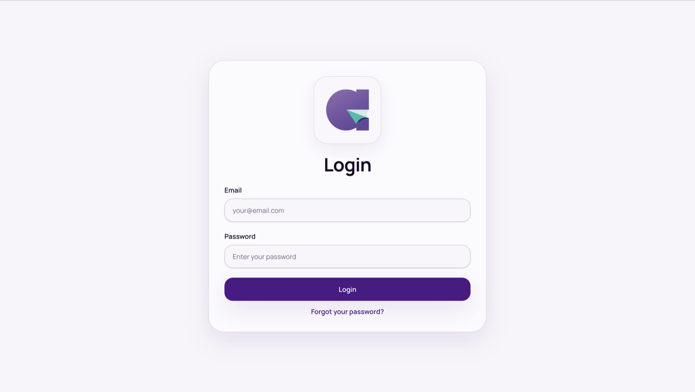
Signing in
The layout
- The sidebar: Executive Overview, Attendance, Claims, Payroll, Leave, Company/Employee, Documents, Activity Log, System Settings
- The company switcher — if you look after several companies, switch here. New company creates one with you as its owner.
- The bell — requests and decisions as they happen, with Mark all read
- The ⋮ menu — Change password (not shown if you signed in through Altomate), push notifications (if your browser supports them), What's new (our release notes, with a dot on the menu until you've read the latest), Guide (opens this guide in a new tab), Launch Appraisify (opens Appraisify in a new tab, so AltomateHR stays open; if your browser blocks the new tab, or AltomateHR is installed as a home-screen app, it opens in the same tab instead), and Log out
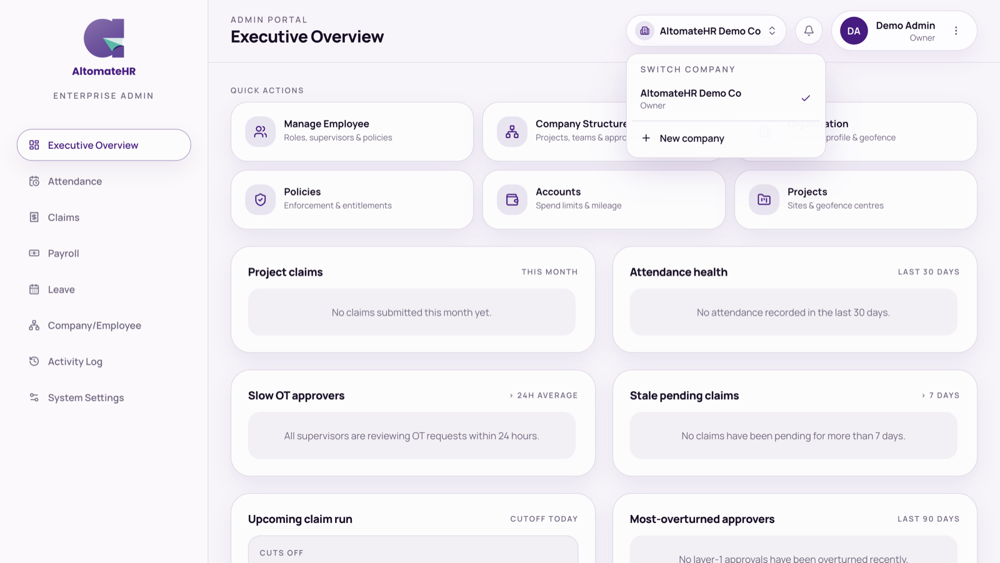
Company switcher
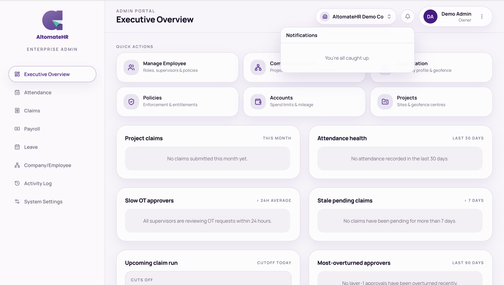
Notifications bell
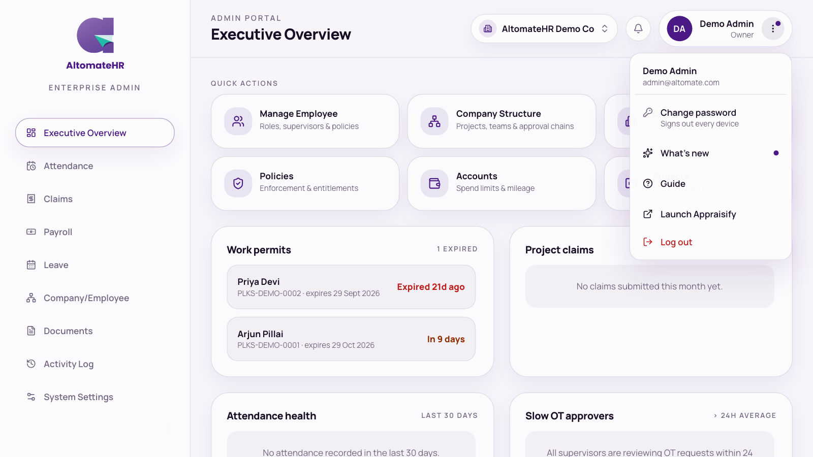
⋮ menu
The admin portal — sidebar, company switcher, bell and account menu
On a phone the sidebar becomes a row of pills across the top, with a second row for sub-pages.
A bar appears — “A new version of AltomateHR is available.” Press Reload.
Executive Overview
Where you land. Built around what needs a decision, not vanity totals.
- Quick actions — straight to Manage Employee, Company Structure, Organization, Policies, Accounts and Projects.
- Work permits — shown first, and only when it applies: foreign workers whose work permit has expired or runs out within 60 days, soonest first, with the permit number and how many days are left (or how long ago it expired). With nothing to renew, the card isn't there.
- Project claims — this month's spend per project. Claims
- Attendance health — on-time rate per project over 30 days, with late, missing and on-leave counts. Attendance
- Slow OT approvers — who averages more than a day to decide overtime.
- Stale pending claims — claims waiting more than 7 days, and who they are stuck with. People appear by name; anyone you don't have access to shows as "Unknown person".
- Upcoming claim run — days to your claim cutoff, and the value queued.
- Most-overturned approvers — supervisors whose approvals are later rejected higher up.
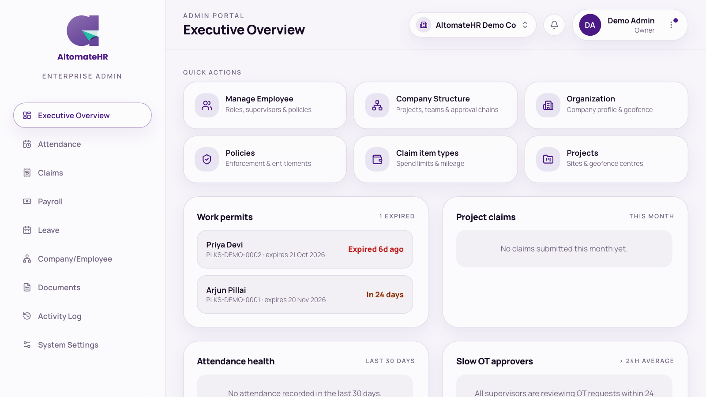
Executive Overview — the Work permits card comes first
System Settings
Done once, and revisited when something changes. Work through the pages in order.
Organization
The company name, the Company logo card, the Signatures card, and the Xero connection card — see Xero.
On the Company logo card, press Upload logo and choose a PNG, JPG or WebP picture up to 2 MB. The logo appears in the preview box and prints at the top left of your HR letters. To change it, press Replace and choose another picture. Remove asks you to confirm, then new letters print without a logo. Letters already made keep the logo they were made with. If the picture is the wrong kind or too big, a red message under the card says so and nothing changes. An admin without Can change company settings can see the logo but not change it.
On the Signatures card, keep the signatures your HR letters can print above the signatory's name — up to 10. With none saved it says No signatures yet. Letters leave a space to sign by hand.
- Add signature — choose Draw to sign on the screen with your finger, a stylus or the mouse, or Upload to choose a PNG, JPG or WebP picture of a signature up to 1 MB (a dark signature on a white or transparent background prints best). Type the signer's Name and Position — for example Tan Mei Ling, HR Manager — then press Save signature. The first one you add becomes the company default on its own.
- Company default — the one tagged Default. Letters use it unless the template or the letter picks another. Press Set as default on a different signature to change it.
- Edit — change the name or position, or make it the default, then Save changes. The picture itself can't be swapped: add a new signature and remove the old one.
- The bin button asks you to confirm, then Remove signature takes it away. New letters can't use it any more; letters already made keep it. If you remove the default, pick another afterwards.
- At 10 the card says That's the limit of 10. Remove one to add another. and Add signature is switched off.
- If the list doesn't load, the card says Couldn't load the signatures with a Try again button. Add is switched off until it loads.
An admin without Can change company settings can see the signatures but not add, edit, make default or remove them.
A picture, not a digital signatureA saved signature is an image of a signature printed on the letter, like signing on paper and scanning it. It isn't a certified or legally verified digital signature. Only save a signature for someone who has agreed to it being printed on company letters.
Accounts
The chart of accounts, in two tabs:
- Expenses — what a claim is coded to. Each can be Selectable for claims, carry a spend limit, and Allow mileage at its own rate. A Type column and a row of filters — All, Depreciation, Direct Costs, Expense, Overhead — match how Xero groups them; only the types you actually have are shown.
- Bank accounts — what a company-paid claim was paid from. Tick Offer for company-paid claims on the ones employees should be able to pick.
Below, Mileage defaults sets the company-wide rate and unit (km or miles). With Xero connected, Xero owns the list — press Sync from Xero after changing it there.
Projects
Your work sites. Open a project with Edit to set:
- Geofenced sites — one or more locations; Use my location fills in where you're standing.
- IP allowlist — office networks (Use my IP). Only checked for employees whose policy requires it.
- Work schedule — hours and working days that override the company default for this site.
Active and Archived tabs keep old sites out of the way. The Geofence radius card sets how close counts as on-site (200 m by default).
Work Schedule
The company's default hours and working days, and the public holidays — pick a Country and Year and press Import, then add or remove any by hand. The calendar shows working days, rest days and holidays at a glance.
Policies
Reusable rules you assign to people instead of setting each one individually: which modules they can use, the attendance checks (geofence, IP allowlist, capturing location, auto clock-out), salary type, overtime method (cash or time bank), OT rates, and leave entitlements. One policy is the default, marked with a Default tag wherever policies are listed or picked — it's what a new hire gets unless you choose another.
Every admin can edit the policies their access covers, so there's nothing to switch on for Policies under Admins. An admin limited to some policies sees only those; a policy that also applies to the company's admins or owner shows Owner only where Edit would be. Only the owner sees New policy, Make default and Archive / Restore; an admin sees a short note saying so.
Admins Owner only
Add admins and decide how far each one can go. Owners are listed too, marked Owner · full access — an owner's access can't be restricted. Each admin row shows their name with their login email underneath, a one-line summary (for example 5 modules (3 view only) · 1 policy · no settings) and three buttons:
- Edit — opens Edit admin to change their Name and Email, then Save. The email is the one they sign in with, and it changes in every company they belong to. If that login also opens a company you don't own, the email can't be changed here and the dialog tells you to ask Altomate support; the name can still be changed.
- Manage access — opens a dialog with three tabs, then
Save:
- Modules — tick All modules, full control, or set each module (Employees, Leave, Projects, Teams, Accounts, Overtime, Claims, Attendance, Payroll, Documents, Activity log) to Off, View or Manage. View lets them see the screens and download what's there; Manage also lets them edit, approve and run. A module set to Off disappears from that admin's sidebar.
- Employees — All employees, or Only employees on these policies with the policies ticked. Everyone else is hidden from that admin in employees, payroll, claims, leave and attendance. Payroll covers the whole company, so an admin limited to some employees can view payroll runs (and only their people's payslips) but can't run payroll or download company-wide files.
- Settings — Can change company settings. Turn it off to let someone work (run payroll, approve, edit employees) without changing how the company is set up. It covers Organization, Work Schedule, Payroll settings, company and statutory details, portal logins and the Xero connection. Accounts and Projects follow their own module level.
- Remove — takes the person off as an admin straight away (you confirm first). Their login isn't deleted, and you can add them again later.
To add someone, open the Add admin tab, enter their name and email (and a temporary password for a new account), and press Add admin. Manage access opens straight away so you can set their limits — a new admin starts with full access until you do.
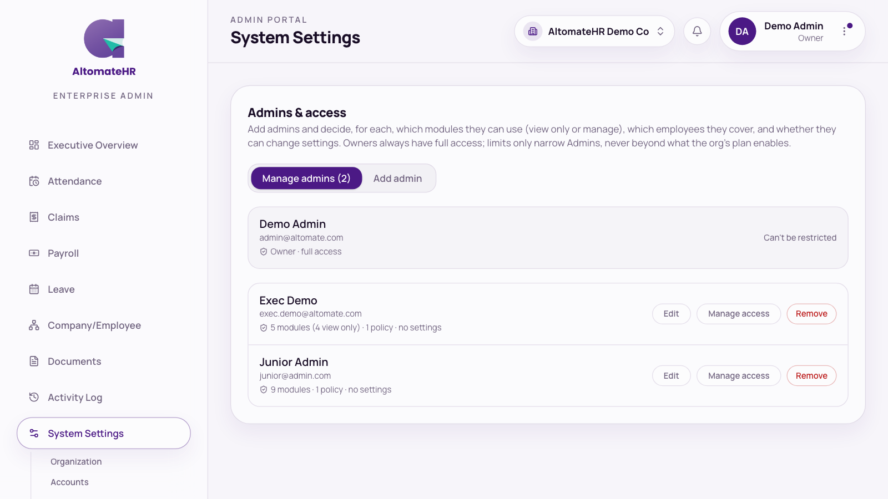
Admins
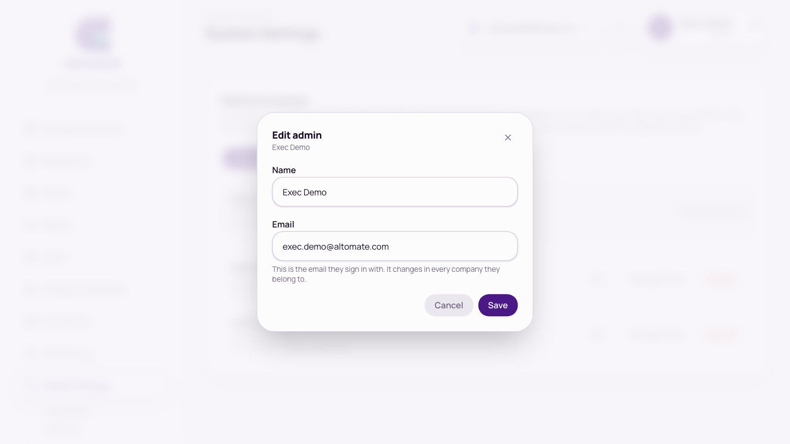
Edit admin
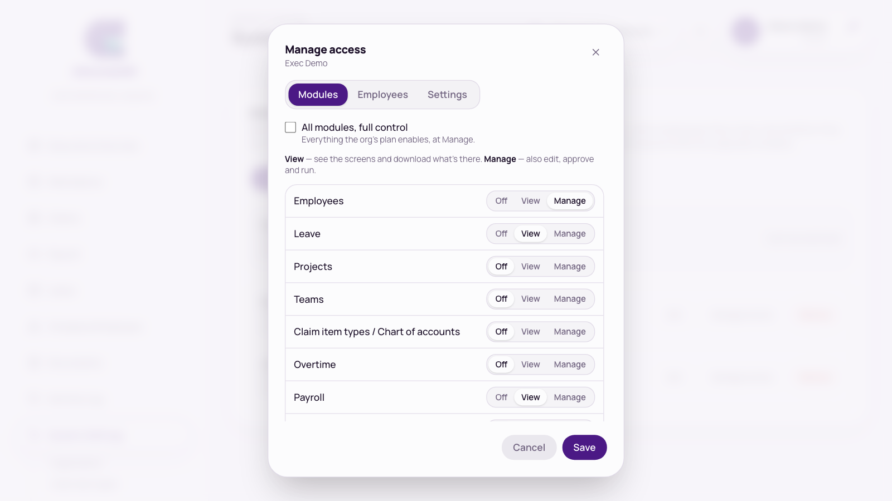
Modules tab
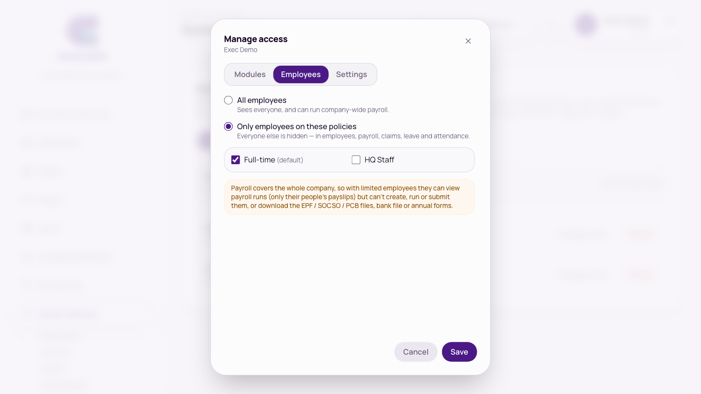
Employees tab
Admins and Manage access
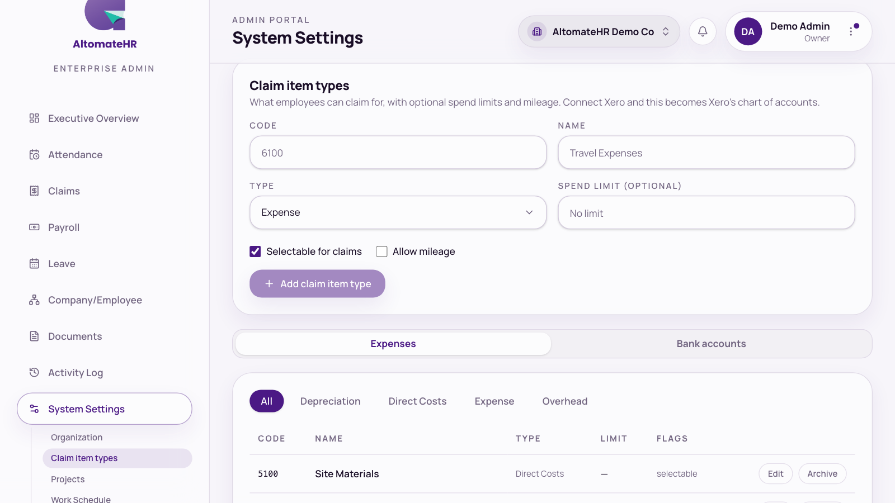
Accounts
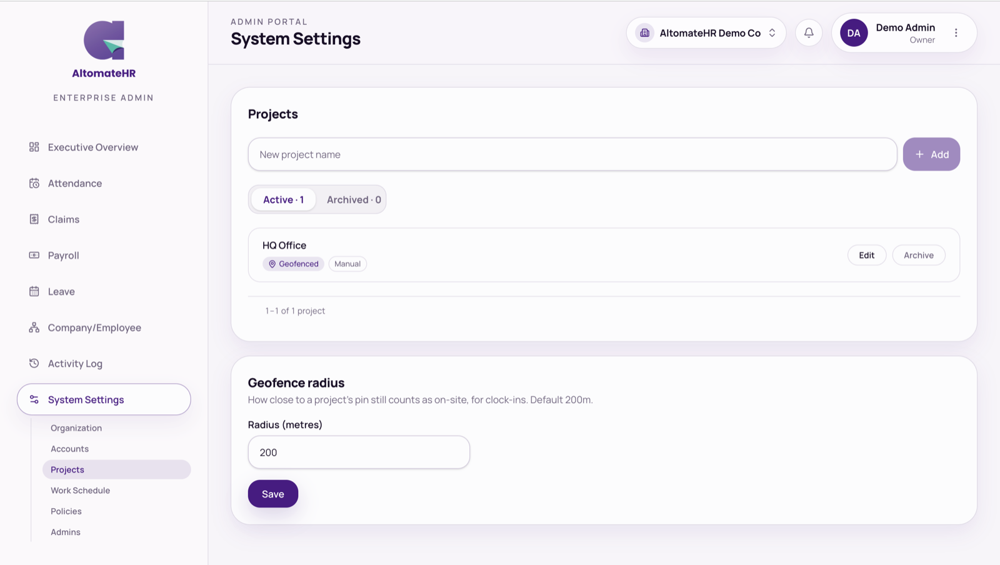
Projects
Accounts and Projects
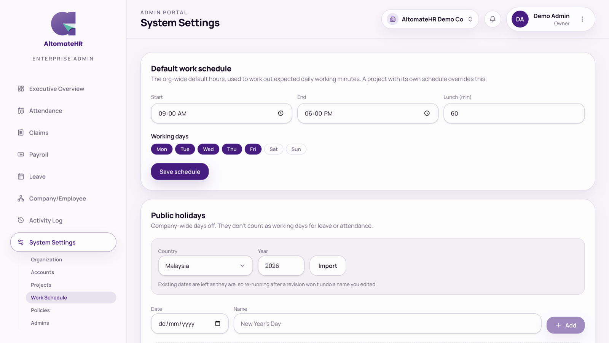
Work Schedule
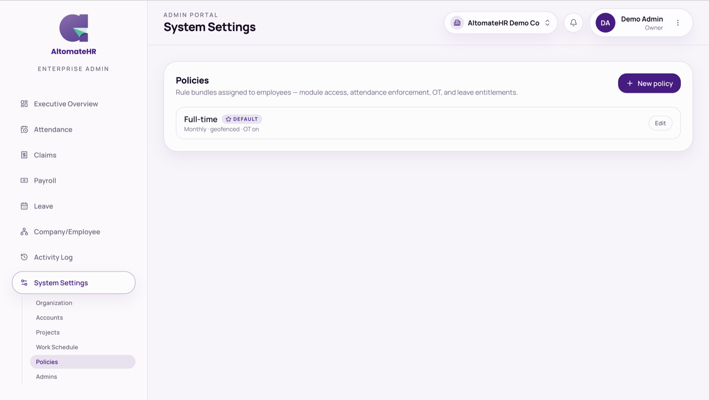
Policies
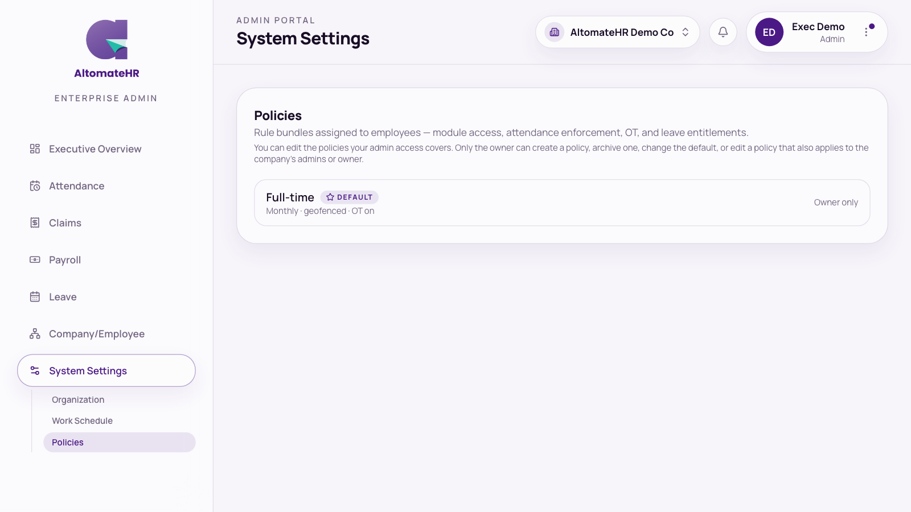
Policies, as a limited admin
Work Schedule and Policies
An admin without Can change company settings sees a View only note above Organization, Work Schedule and Payroll settings, and those forms are greyed out. If their payroll access is view only, or they cover only some employees, the Payroll runs page shows a short message instead of Create draft and the run's action buttons. On the Employees page, Add employee needs Manage on Employees, and Import also needs All employees.
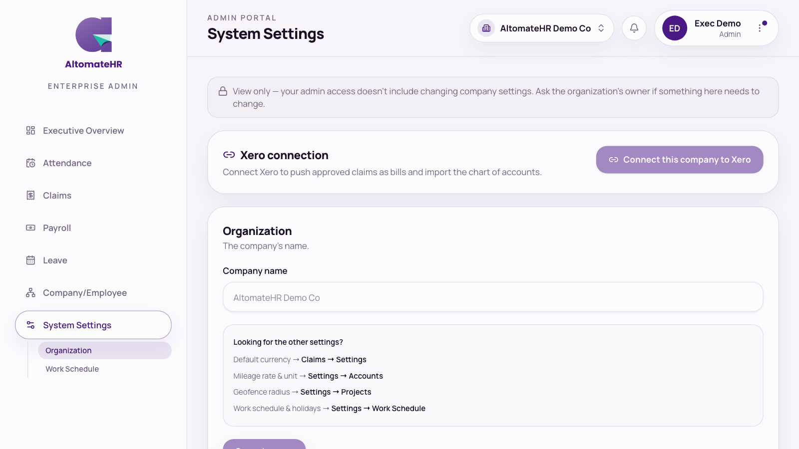
Organization
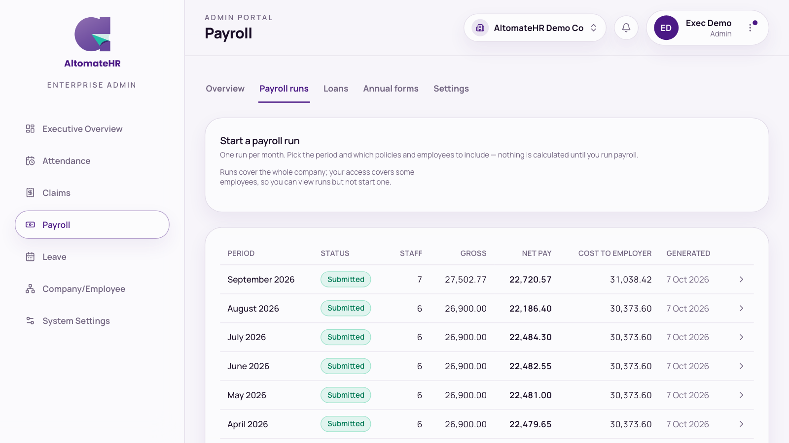
Payroll runs
What a limited admin sees
Payroll settings
Under Payroll → Settings. Four sections, each marked Completed, Required or Optional so you can see what's left.
Until someone presses Save payroll settings on the General section, a note says payroll hasn't been set up yet. The values shown are the Malaysian defaults — review them and save to confirm. Choosing the payroll start month under Annual forms doesn't count as setting up.
General
- Working-days rule — calendar days in the month, or 26 days. It sets the daily and hourly rate used for overtime, and how a mid-month joiner or leaver is prorated (26 days: that month's Monday–Saturday days; calendar: its calendar days). It doesn't change how unpaid leave is deducted — that always uses the month's calendar days (see Running payroll).
- EPF defaults and your EPF employer no.
- HRD Corp levy — whether you pay it, the rate, and your HRD Corp employer no.
- PCB compliance — auto-apply the RM 350 SOCSO + EIS relief.
- Payroll disbursement bank — Maybank, CIMB, Public Bank or Hong Leong, with the account details. This decides which bank file a run produces. Choose “Other bank” if you pay salaries another way.
- Xero sync on submit — post the payroll journal to Xero when a run is approved.
Form E (LHDN)
Your employer particulars: employer name, LHDN employer no. (E number), SSM registration no., income tax reference type and no., PERKESO employer code, KWSP and HRD Corp numbers, contact details and address, zakat no., employer category and status, CP8D furnish type — then the declarant who signs Form E and your tax agent and firm, if you use one.
Employer name, E number, SSM number and PERKESO code are required. A run can't be sent for approval while any is missing — the app tells you while you're still preparing the run, not when you try to download.
Credentials
Store your KWSP i-Akaun, PERKESO ASSIST and LHDN e-PCB logins so whoever runs payroll has them. They're encrypted, but anyone who can open this page can reveal them.
Xero sync
With Xero connected: how expense lines are grouped, the tracking category for projects, and which Xero accounts each payroll line posts to.
Changes are saved with the bar that appears at the bottom — Save changes.
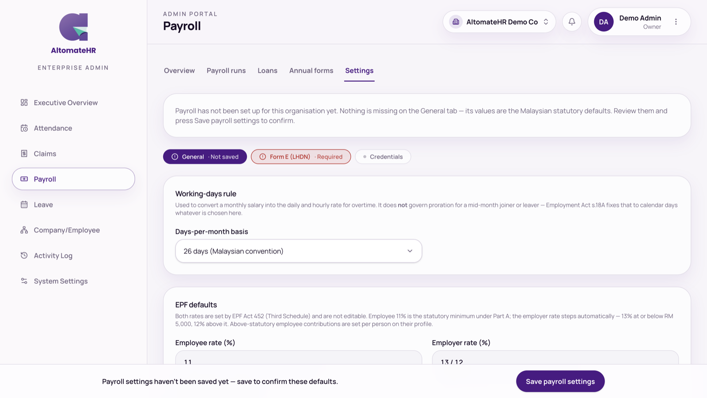
General
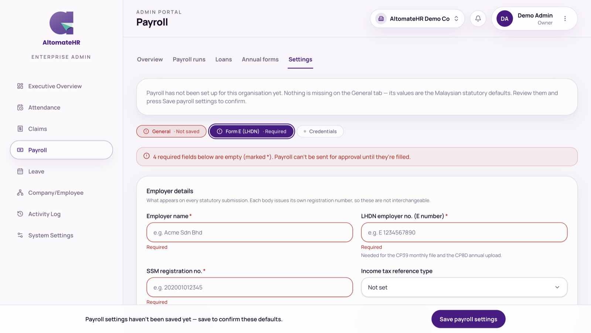
Form E (LHDN)
Payroll settings
Employees
Company/Employee → Manage Employee. Everyone you pay, and everything payroll needs to know about them.
The list
- Search, filter by role, and by status — Active (the default), Archived or All statuses.
- People are split into three boxes: need payroll setup (something's missing), ready for payroll (who a run will include), and archived (left the company — kept for their records, left out of runs after their last month).
- Someone with a transfer queued has a tag under their name — Transfer → Demo Transfer Co on 2026-11-01 (or Transfer failed if it didn't go through).
- Anyone with no salary on file is named in a warning — they'd get a zero payslip, which stops the run being submitted.
Adding people
- Add employee — name, an optional Nickname, employee ID (optional — leave it blank and the next number in your company's pattern is assigned; the field shows it, for example D-908 (auto)), job title, join date, email, date
of birth, role and policy. The policy starts on your default one (or, if you're an admin who can't see the default, on your own first policy). Their starting password is
their email followed by their birth month and day (e.g.
ali@company.com1123), or one you type. Tick Send a welcome email to have it sent to them. - Import — one spreadsheet to add new people or update everyone at once,
payroll, bank and statutory details included.
- Step 1 — Blank template for new hires, or Export current to update people already here. The file's READ ME sheet explains every column.
- Step 2 — choose what a blank cell does: Keep existing values (the safe default — a partly filled file can't wipe anything) or Erase existing values (use only when the file is the full, up-to-date record; you're asked to confirm, and Name, Role, Employee No, Salary Type and EPF/EIS can't be erased). The file has an optional Nickname column, next to Name; Export includes it too.
- Step 3 — upload it. An email already in the company updates that person. Rows that were imported but need a look — for example a nationality it didn't recognise, kept as typed — are listed as warnings. New passwords are shown once — copy them then.
- Export — Export employee details as Excel or PDF. Choose All fields or Choose fields, and tick Include archived employees if you want them. A PDF page fits about a handful of columns, so use Excel for a wide export.
- Salary adjustments — shown only if your access includes Payroll. A pay round for many people at once. Download template (everyone with their current salary), fill in New Salary — and optionally Effective Date, Reason and Notes — only for people whose pay is changing, then upload it. A new salary applies straight away, so the effective date can be today or earlier, not later. It's all or nothing: if any row has a problem, nothing is saved and the rows are listed. Each change goes into the person's salary history, and draft payroll runs are marked for a re-run. Archived people are refused, with one exception: someone who has left but whose final month is still being paid can take a change that starts on or before their last day. A later start is refused.
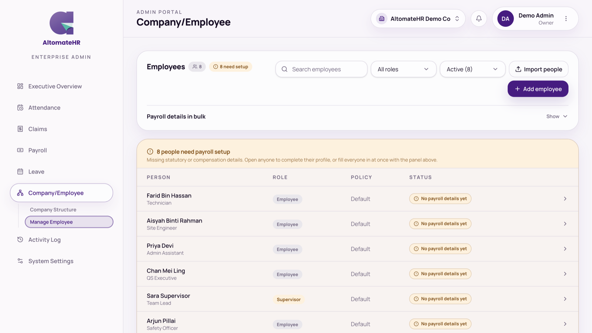
Manage Employee
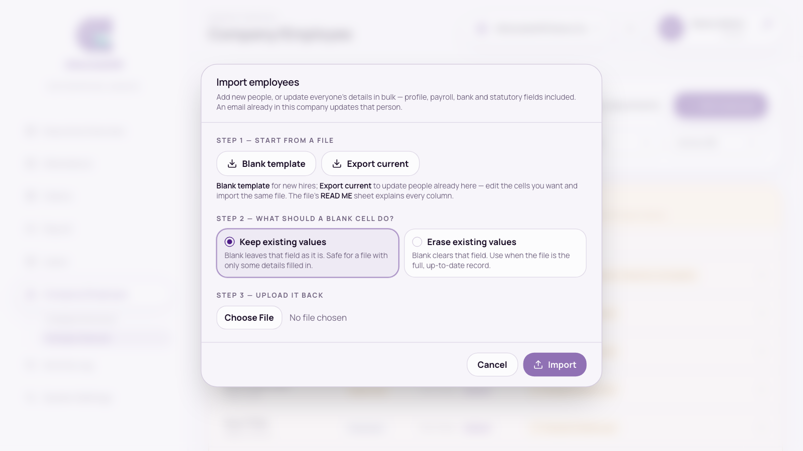
Import
Manage Employee
An employee's record
Click anyone to open their record. Five tabs, each showing how many required fields are still empty (outlined in red):
| Tab | What's in it |
|---|---|
| Personal | Contact (Full name and Nickname), identity (nationality is picked from a list), PR / tax resident / OKU, address, emergency contact, spouse, children. For a foreign worker, Identity also has the Work permit number and Work permit expiry — see below |
| Employment | Monthly salary or hourly rate and its Salary history, fixed allowances and deductions, join date, employment status, contract end date, Probation (months) and Confirmation date (both printed on offer and confirmation letters), previous employment this year (TP3), Archive — last day and reason, and Employment history at the bottom |
| Statutory | EPF, SOCSO / EIS / SKBBK, income tax, the Special tax rate (15%), Bank / payout, and the LHDN forms for that person |
| Company | Employee number, job title, role, policy, department, Work location (next to Department; HR letters use it for their Work location), and which projects, teams and approval level they sit in |
| Documents | ID scans, contracts, certificates — and, below them, the Letters card with the HR letters kept for this person |
Nicknames
Some people are known by a shorter name. Give them a Nickname and supervisors and admins see it beside the full name wherever the app shows who someone is, for example Arjun Pillai (Arj). It never replaces the full name.
Set it
Open the person, go to Personal and type it in Nickname, next to Full name, then save. You can also set it when you press Add employee, or fill the Nickname column in the Import spreadsheet. Clear the box to remove it.
Where it shows
The employee list (you can search by nickname too), the leave, claims, overtime and attendance screens and their approvals, the Executive Overview, and the list of people when you pick who to include in a payroll run.
Where it doesn't
Payslips, statutory files, EA and other LHDN forms, bank files and HR letters always use the full name. Matching people when you import a spreadsheet goes by the full name too, not the nickname.
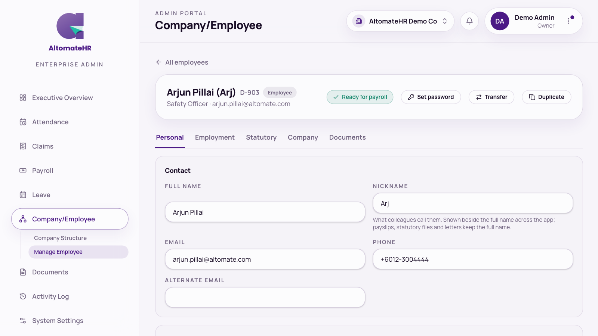
Nickname on the Personal tab
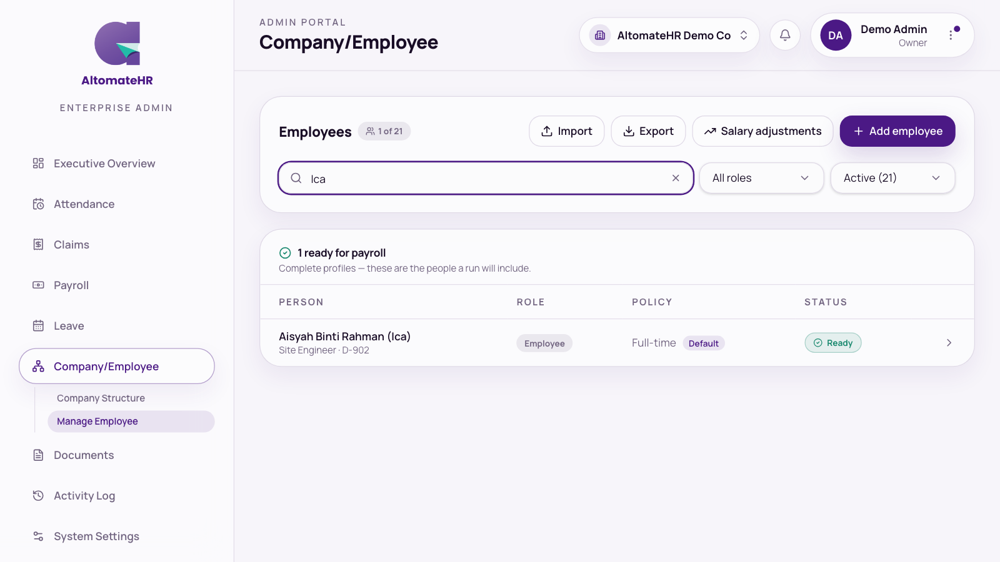
Searching the list by nickname
A nickname shows beside the full name
Work permits
For a foreign worker, keep their Immigration work permit on file so a renewal isn't missed.
Set the nationality first
Open the person, go to Personal and, under Identity, pick their Nationality. The work permit fields appear only for someone who isn't Malaysian and has no PR — a citizen or PR has no permit to renew.
Fill in the permit
Type the Work permit number (the Immigration work permit, not the SSFW number) and pick the Work permit expiry date, then save. Under the date, a line tells you where it stands: Valid until a date, Expires in N days once it's within 60 days, Expires today, or Expired.
Watch the Executive Overview
Once a permit is expired or within 60 days of expiring, the person is listed on the Work permits card of the Executive Overview. Archived employees and people who have already left aren't listed.
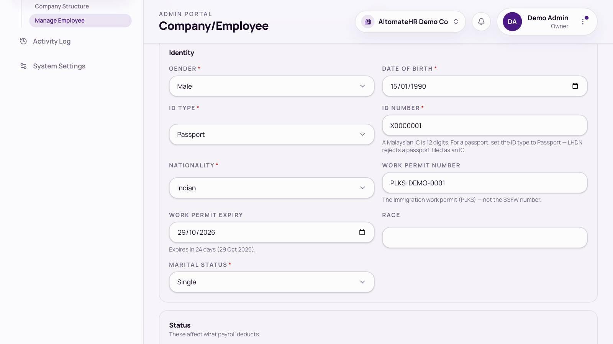
Work permit number and expiry, under Identity on the Personal tab
The import spreadsheet has Work Permit No and Work Permit Expiry columns (date as YYYY-MM-DD, foreign workers only), so permits can be filled in for many people at once with Import.
Bank / payout
On the Statutory tab, Bank / payout starts with a Method:
- Bank transfer (Malaysian bank) — pick the bank from the dropdown and fill in the account number and holder. This person is in the bank file.
- Other bank / e-wallet (paid manually) — type the Bank / provider (for example Merchantrade or an overseas bank), the Account / wallet number and the Account holder. Nothing is checked against the Malaysian bank list.
- Cash (paid manually) and Cheque (paid manually) — no details needed.
Everyone except Bank transfer is left out of the bank file and listed on the run's Manual Payments sheet instead.
For Bank transfer, choose the employee's bank from the dropdown of Malaysian banks. The bank file refuses the whole run if anyone's bank isn't recognised — so a typo would stop everyone being paid. For anyone paid another way, use one of the manual methods above.
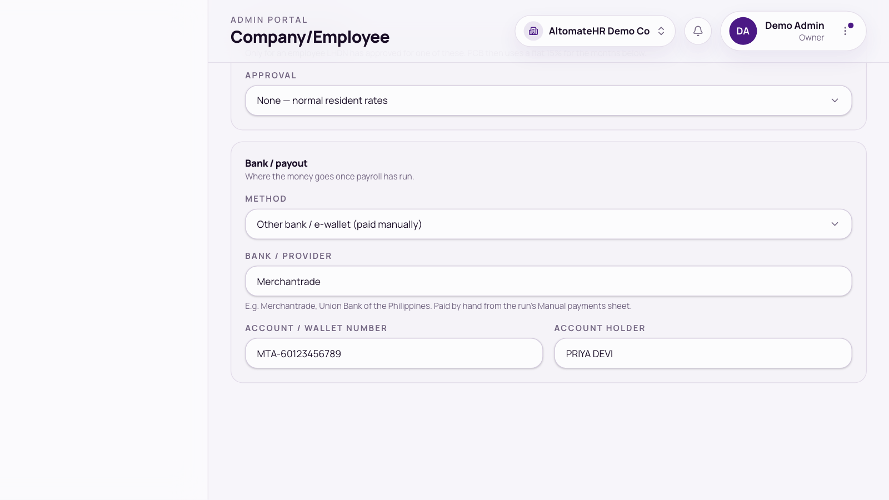
Bank / payout set to Other bank / e-wallet
Edits are saved with the bar at the bottom. Set password in the header sets a new password for them — hand it over outside email.
The Email on a person's record is the email they sign in with, so it changes everywhere they work. Saving is refused, with a message saying why, in these cases:
- The person's login is also used in a company you don't own. Ask Altomate support to change it.
- The person is an admin and you aren't the owner. Only the owner can change an admin's login email.
- The person is an owner. An owner's login email is changed only through Altomate support (an owner can change their own).
Archiving, and employment history
On the Employment tab, turn on Archive this employee and set their last day and reason. Payroll still pays them up to their last day, then leaves them out. At the bottom of the tab, Employment history lists every stretch of employment at this company — its dates, a Current tag on the present one, and why it started or ended (Resigned, Transferred to …, Restored). The dates higher up only show the current stretch.
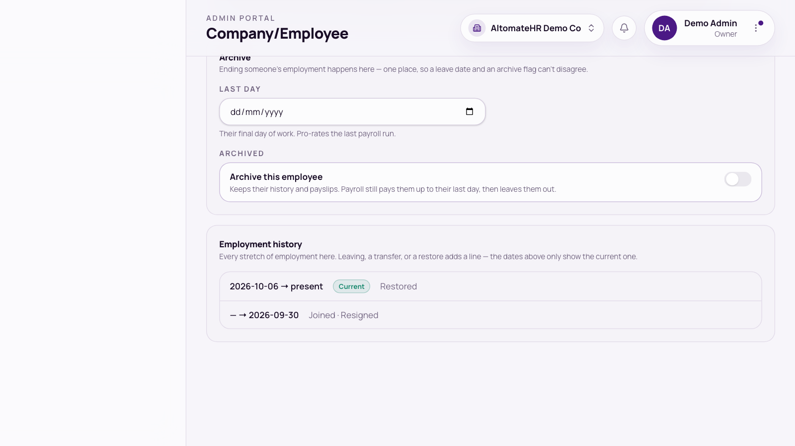
Employment history
Archive and Employment history, bottom of the Employment tab
Moving someone to another company
If you look after more than one company, two buttons sit in the employee's header, next to Set password. They appear for staff, not for owners or admins, and only when there is a company you run where the person doesn't already work. Archived people must be restored first.
- Transfer — they leave this company and start at the other one.
- Pick the Target company, the Policy at the target and the Effective date — their first day there. Today moves them straight away; a later date queues the transfer, and it runs by itself that day.
- Personal details, job title and staff number always go across. Tick Include payroll settings to also copy salary, allowances, bank and statutory setup, plus this year's earnings so far, so PCB at the new company carries on instead of starting over. Teams, shift, leave balances, claims and documents don't go.
- Add a note if you like, then press Transfer now or Schedule transfer.
- Duplicate — they keep working here and are added to the other company (same login; they switch between the two). In Add to another company pick the Other company, Policy there and Join date there, choose whether to include statutory numbers and bank, and press Add to company. Set their salary at the other company.
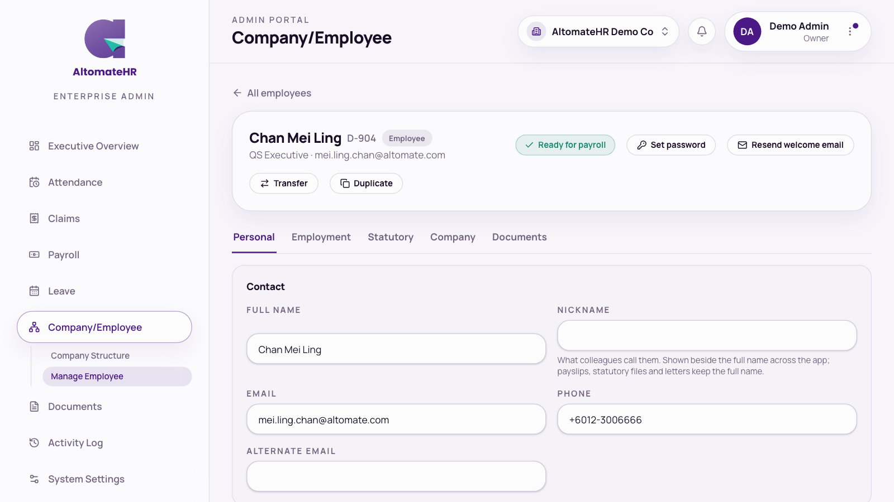
Transfer and Duplicate
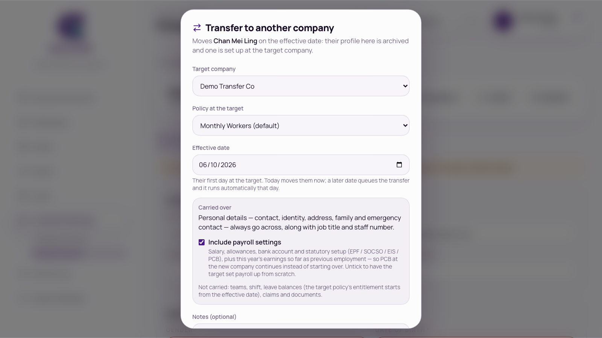
Transfer dialog
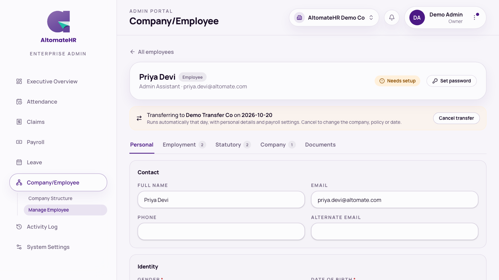
Queued transfer
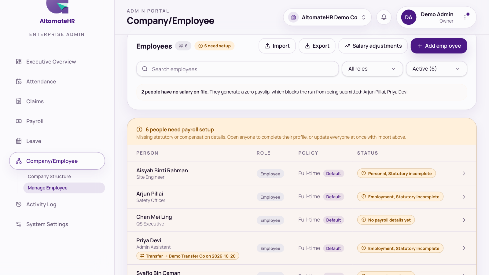
Tag on the list
Moving someone to another company
While a transfer is queued, a banner at the top of the record says Transferring to … on …, and the Transfer and Duplicate buttons are hidden. Press Cancel transfer to change the company, policy or date, then schedule it again. If a transfer fails, the banner says why; it retries by itself, or you can cancel it.
Both companies pay the person for part of that month, so do the payroll in this order:
- At the old company, approve and file that month's payroll first.
- At the new company, press Re-run payroll on that month's draft — it adds the person (see Running payroll) and carries over the year-to-date from the old company — then send it for approval and approve it.
Approving the old company first means the new company's tax (PCB) starts from the right year-to-date figures.
After the move, the person sees the old company as Former · payslips only in their company menu — they can still read their payslips there, nothing else (see the employee guide).
Changing a salary
Change the salary on the Employment tab and press save, and you're asked Why is the salary changing?
- Typo correction — the old figure was a mistake. It's fixed, and nothing is added to the history.
- Salary adjustment — a raise, promotion or restructure. Pick the Effective from date (today or earlier — the new salary applies straight away), a Reason (Raise, Promotion, Demotion, Restructure or Other) and optional notes, then Save salary. A date inside a month that's already on a payroll run is flagged on that run.
Salary history, under the salary, lists every real change with its date, reason and the old and new figure.
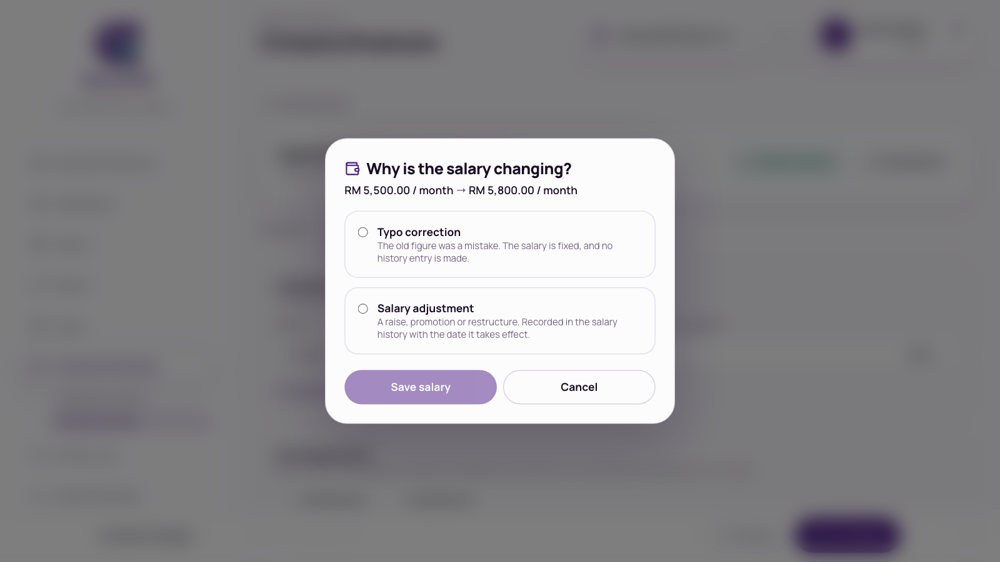
Why is the salary changing?
Other things worth knowing on the record
- Malaysian citizens — PR is off and tax resident is on, and both are locked: a citizen is always taxed as a resident.
- EPF number — on the Statutory tab, digits only: the member number on the employee's KWSP statement, for example 21968561. If the box holds anything else, such as a placeholder like XXXXXX — even one saved before — it turns red and says Digits only — the member number on their KWSP statement (e.g. 21968561)., the bar at the bottom repeats it, and Save changes does nothing until you fix it. KWSP refuses the whole contribution file over one number that isn't digits, so this is caught here, and the EPF Contribution CSV download in a run's files is refused too, with a message naming each person to fix. Correct them on their Statutory tab and download again — you don't need to re-run payroll. Leave the box empty for someone who doesn't contribute.
- SOCSO number — Use ID number copies the IC / passport number from the Personal tab, since for most employees it's the same.
- Previous employment (TP3) — items with a yearly limit — press Add item for each tax-exempt allowance or TP1 relief the previous employer already gave this year, with the amount. It uses up that item's yearly limit here.
- Previous employment (TP3) — the Year — as soon as you fill in any TP3 amount (remuneration, EPF, PCB, deductions, zakat or an item above), the Year box must hold the year those figures are for, for example 2026. Without it the figures aren't used, so AltomateHR won't let you save: the box turns red and says Enter the year these TP3 figures are for — without it they aren't used., the same message appears on the bar at the bottom, and Save changes does nothing until you fix it. A year that isn't four digits says Enter a 4-digit year, e.g. 2026. The empty box shows e.g. 2026 in grey as an example; it isn't filled in until you type it.
- Special tax rate (15%) — only for someone LHDN has approved (Returning Expert, knowledge worker or C-suite). Choose the approval and, if it's time-limited, the From month and To month; outside them PCB goes back to the normal resident rates.
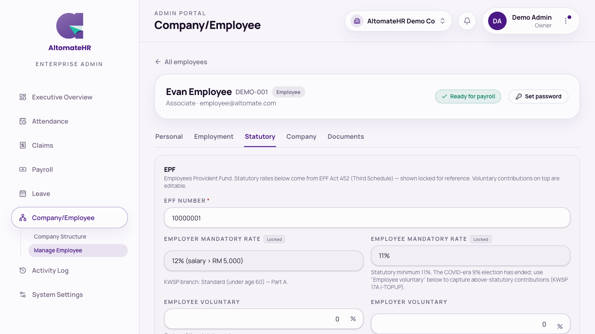
Statutory tab
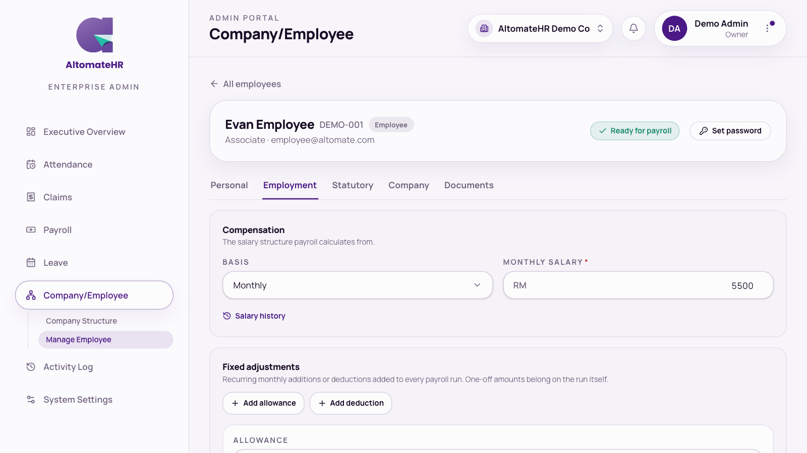
Employment tab
An employee's record
Company Structure & approvals
Company/Employee → Company Structure decides who approves what. Get this right and every request goes to the right person automatically.
Pick a project, then a team
Or press New to create a team — it's created in the project you've selected. Deleting a team asks you to confirm: its members are unassigned and their claims and leave stop routing through it.
Set the layers
1 to 6 levels (type a number in the Layers box), each with a label — e.g. Staff, Supervisor, Manager.
Tick who approves each module
For Claims, OT, Leave and Attendance, tick which layers must approve. A request climbs from the person's own level up through each ticked layer.
Add members
Add each employee at their level. People with the Employee role go in the bottom layer.
You can also place someone from their own record — Company tab → Add a project.
Owners and admins are never put in an approval chain. If a request has no one who can approve it, the admin portal flags it as “Nobody can approve” so you can fix the team.
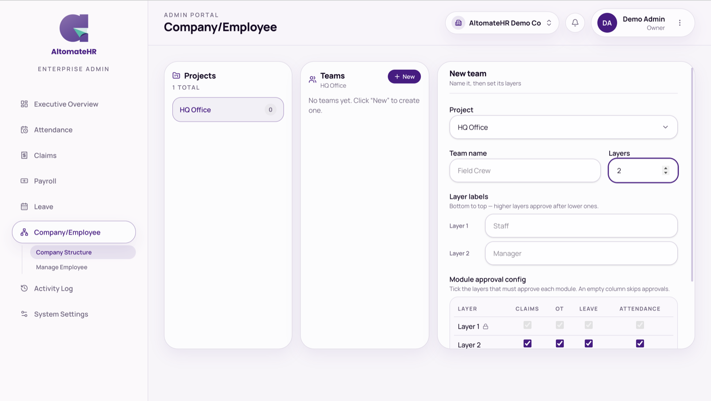
Company Structure — teams, layers and who approves
The monthly routine
Every month
Attendance
OptionalEvery month
Staff clock in from their phones; you see the whole company's day here. Four tabs.
Overview
- Today — the roll call. Status chips with live counts: On time, Late, On-site, Off-site, No clock-in, On leave. Click one to filter. Off-site rows show how far away they were and the reason they gave, with photos and a map link. Only staff (Employees and Supervisors) are listed — the Owner and admins don't appear, and the Employees tab lists the same people.
- Analytics — hours worked against the schedule: normal, expected, beyond shift, approved OT, rest day and holiday.
- Performance — how long each supervisor takes to decide.
- History — the approval trail and attendance records, exportable as CSV, XLSX or PDF.
Filter by project, team or name, and pick a date range.
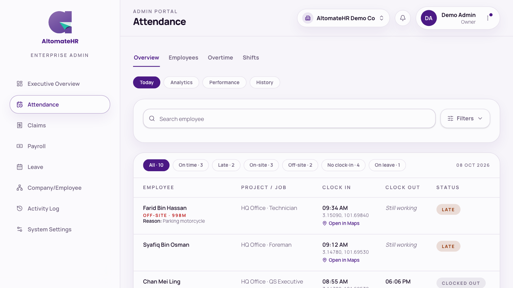
The day's roll call
Employees
A card per person. Open one for their year at a glance — a heatmap of on-time, late, absent and leave days — plus hours worked, recent attendance, and PDF exports.
Overtime
Every overtime submission with its before-work and after-work photos or PDFs (an employee can attach up to ten of each), filterable by status. Read-only — supervisors approve overtime from their own queue.
Shifts
Define shifts per project (e.g. Day 8:00–17:00), with working days and unpaid break minutes. Whether someone is late, and how many hours they were expected to work, come from their shift.
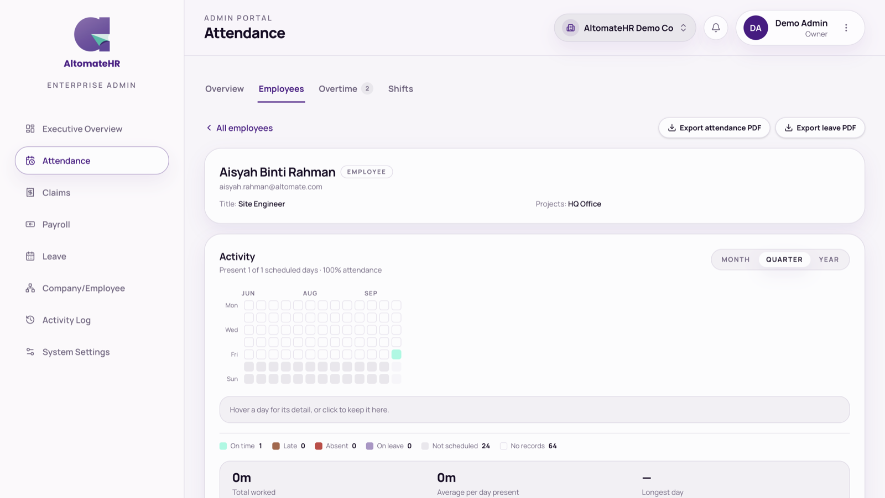
Employee attendance
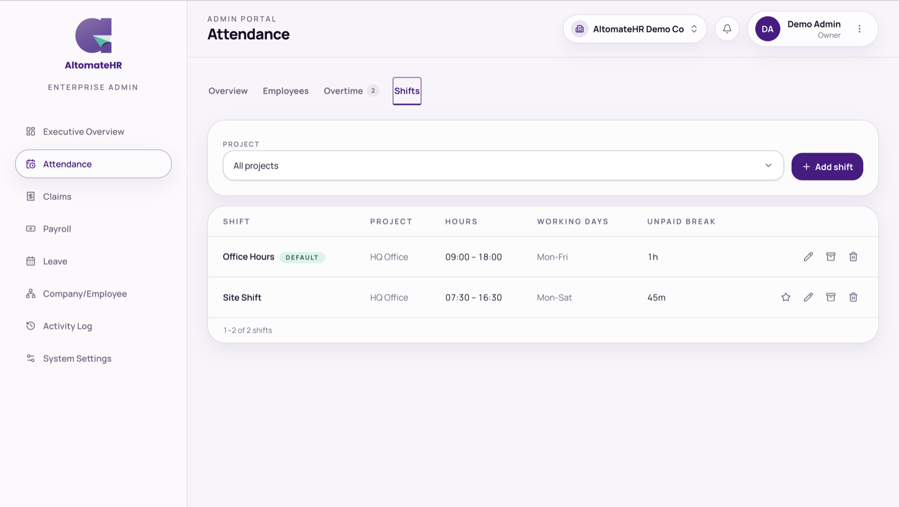
Shifts
An employee's year, and shifts
Claims
OptionalEvery month
Employees submit claims from the app; supervisors approve them. Here you watch the queue and decide how approved claims are paid.
Overview
What's stuck: claims pending over 7 days, the queue awaiting approval, claims over their spend limit, who each late claim is waiting on, where the money is going this month, and approvals later overturned. Every number opens the matching claims.
All claims
Filter by project, employee, own-money or company-money, and dates. The last column tells you where each claim stands — who it's waiting with, “In Xero”, “In the payroll run”, or a button to retry a Xero push that failed. Open a claim to see its details: the employee is shown by name, and for company money the Company bank line shows the name of the account that paid.
Settings
- Default currency.
- How approved claims are paid — one route for the whole company:
Sync to Xero, Add to payroll or
Don't send anywhere. Each route shows two lines, Own money and Company money:
- Sync to Xero — own-money claims become a bill in Xero to pay the employee back (choose Awaiting payment or Draft); company-money claims become Spend Money in Xero, from the bank account that paid. The main receipt and every supporting document are attached to the bill or Spend Money, so they show in its Files panel in Xero. If a file can't be attached, the claim still counts as synced.
- Add to payroll — own-money claims are reimbursed through the employee's pay; company-money claims go to Xero as Spend Money, since there's nobody to reimburse. Without a Xero connection, a company-money claim stays approved in AltomateHR.
- Don't send anywhere — both kinds stay approved in AltomateHR and you handle them your own way (you can still add an own-money claim to a payroll run by hand).
- Claim run cutoff — the day of the month claims are cut off.
Export the list as CSV, XLSX or PDF from the button beside the tabs.
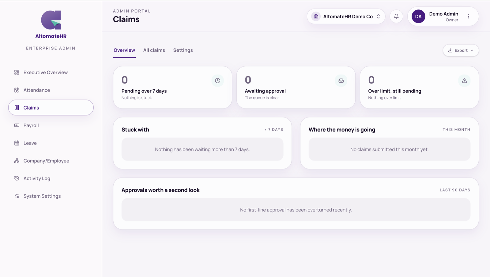
Overview
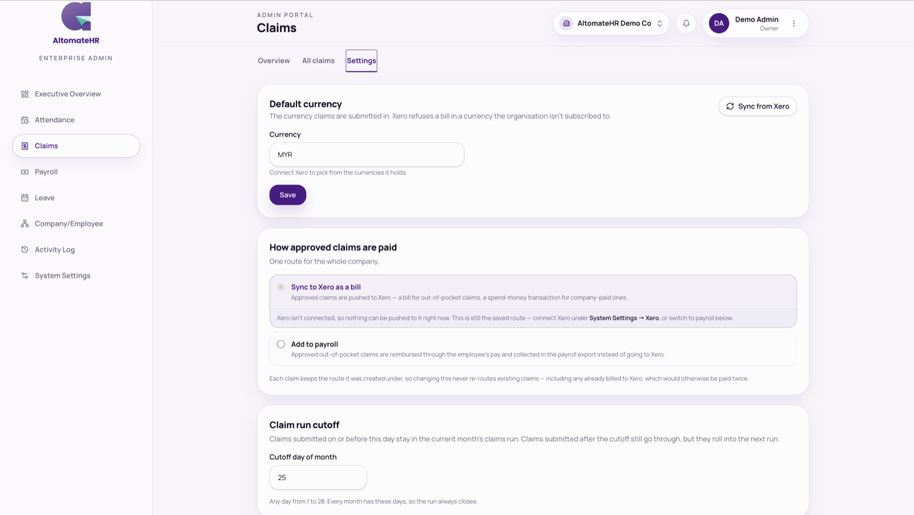
Settings
Claims
Leave
Every month
Employees apply from the app; supervisors approve. Here you set the rules and see everyone's balance.
- Overview — pending approvals, who's on leave today (by name), what's been approved this year, and days used by type.
- History — every application, filtered by person, type, dates and status. An approved leave an employee has asked to cancel shows a Cancellation requested tag (or Cancellation declined if their approver said no). Open one to change it (Edit leave) or cancel it.
- Balances — every staff member's remaining days per leave type (Employees and Supervisors; the Owner and admins aren't listed, and aren't in the export either). Open a person to Apply on behalf (recorded as approved straight away), change or reset their entitlement, or export their leave report. A person's list shows only the leave types that are for them (see Types), so maternity doesn't appear for a man.
- Types — your leave types (code, name, annual days, paid or unpaid, and who it's For), and for Annual Leave: lump sum or pro-rated, and carry-forward with its expiry month and maximum days.
Leave for one gender only
Each leave type has a For setting: Everyone, Female only or Male only. Pick it when you add a type with Add leave type, or change it with Edit on the type's row. New companies start with Maternity Leave set to Female only and Paternity Leave to Male only; every other type is for everyone.
Employees only see the types that are for them when they apply for leave, and so do you in Apply on behalf and in a person's leave balances. The setting follows the Gender on the employee's profile. Someone with no gender on their profile can take either, so fill it in for anyone who might apply for maternity or paternity leave. If a person already has leave of a type that isn't for them, it stays in their history and balances, marked as not eligible, but they can't apply for more of it.
Employees changing their own leave
An employee can Edit their own pending leave (type, dates, reason, attachment) until an approver has acted on it. It stays pending and stays in the approver's queue, with the days counted again for the new dates. Leave you filed for someone with Apply on behalf, or imported, can't be edited by the employee — change it for them by cancelling it here and applying again.
Changing someone's leave
Need to correct leave that hasn't started yet? Open the application in History and press Edit leave, beside Cancel this leave. It's there for pending and approved leave that starts after today, so you can use it on leave you filed with Apply on behalf or imported too. It isn't there once the leave has started, or while the employee's request to cancel it is still being reviewed — decide that first. A leave that has already started can only be cancelled.
The Edit leave window is filled in with what's there. Change the Leave type, the Start date and End date (the dates can't be in the past), and the Reason (clear it to remove it). When the start and end are the same day, a Duration box appears: Full day, Morning (half day) or Afternoon (half day). Working days shows what the leave will take off their balance, with weekends and public holidays left out. Press Save changes.
- The leave keeps its status. Approved leave stays approved; pending leave stays pending with whoever is reviewing it.
- You can't save if the new dates have no working days, or a paid type would take more than the employee has left. The same type rules apply as when applying, such as types that are for one gender only.
- The employee gets a Your leave was changed notification with the old and new leave. Changing only the reason, or saving with nothing different, doesn't send one.
- The approval trail shows Changed by admin with the leave before and after, and the change goes in the Activity Log.
- Changing approved unpaid leave marks any open payroll draft for the old and new dates for a re-run. A month already approved isn't changed: the difference is settled on the person's next payroll run instead (see Running payroll).
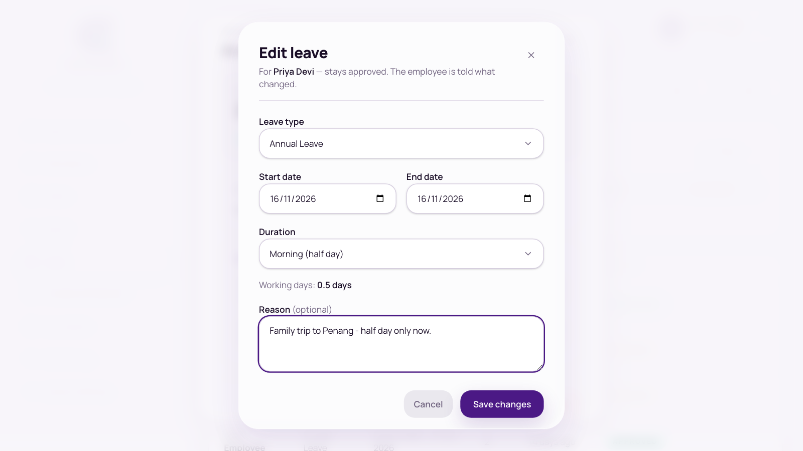
Edit leave
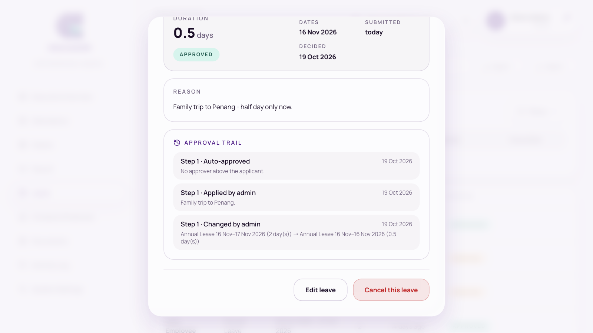
The change in the approval trail
Changing leave before it starts
Cancelling someone's leave
Open an application in History and press Cancel this leave — it works on a pending request or on approved leave. Add a Reason if you like (the employee sees it), then Cancel leave (or Keep it to back out). Approved days go back into their balance and they're notified; it can't be undone, so they'd need to apply again. If they'd already asked to cancel, cancelling here completes it at once. Cancelling approved unpaid leave marks any open payroll draft for those dates for a re-run. If that month's payroll was already approved and the days were deducted, they're paid back on the person's next run. The cancellation is recorded in the Activity Log.
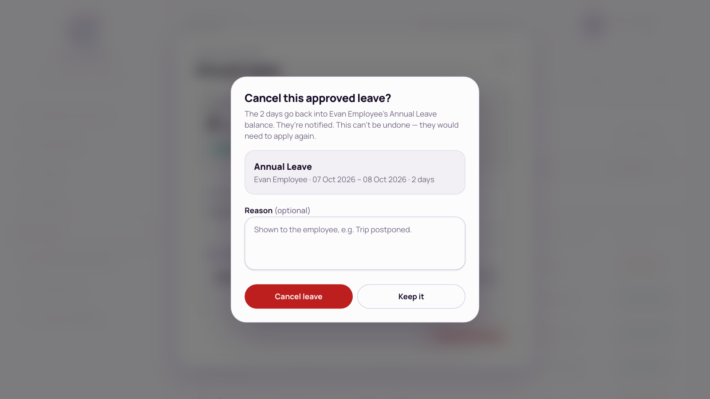
Cancelling approved leave
Importing leave history
Moving over from another system? Import brings in leave your staff have already taken, from a spreadsheet. It imports leave taken, not entitlements, so each person's balance works itself out from the days imported. Open Import, under Leave history choose Upload a file, and the Import leave history window opens. Pick XLSX or CSV, press Download template to get the columns to fill in, choose your file under File to import, then press Import. The window then shows how many rows were imported, skipped or failed, with the reason for each row that failed.
If the file uses leave types your company hasn't set up yet, a Leave types not set up yet panel appears in the window. It lists each missing type with the number of rows that use it. For each one:
- Check the Code. It's suggested from the initials of the name, and it can't be the same as another leave type's name or code, or another leave type name in your file. Change it if you prefer another.
- Enter the Annual days each person gets. Untick Paid for unpaid leave; the days then stay at 0.
- Press Add. The line changes to Added as and the code.
Once you've added them, the Import button now reads Import again. Press it to run the same file again: rows already imported are skipped, so only the rows that failed come in. Other settings, such as limiting a type to one gender or carrying days forward, can be changed afterwards under Leave → Types.
You don't need to reload the page afterwards: History, Balances and Overview update by themselves once something has been imported.
Year rollover and monthly accrual run by themselves; the buttons under Maintenance are there if you need to run them early.
Approved unpaid leave is deducted in that month's payroll automatically. If it's approved while the month's payroll is still a draft, the run is marked for a re-run. If it's approved after that month's payroll was approved, it's deducted on the person's next run instead, and cancelled leave that was already deducted is paid back the same way — see Running payroll. If a person's unpaid leave isn't in the Leave module, you can type their unpaid days on the payroll draft instead.
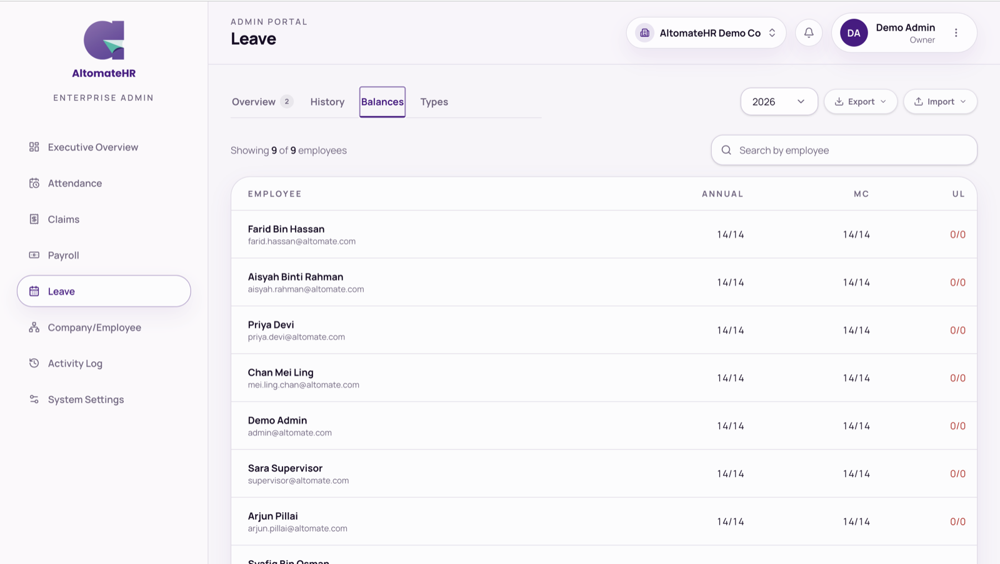
Balances
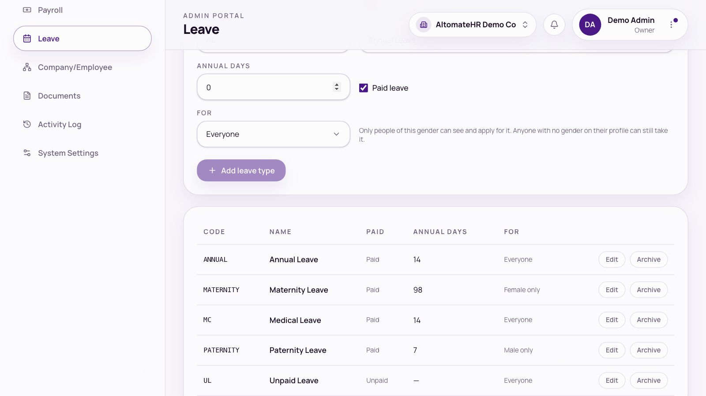
Types
Leave balances and types
Running payroll
Every month
Payroll → Payroll runs. Draft the month, run payroll, check it, send it for approval, then approve and file. Most companies pay a month in one run; you can also pay a month in several runs.
Create the draft
Create draft — in Start a payroll run, pick the month and year, and which policies and employees to include. Changing the month reloads the list, because who is payable depends on it: someone who left is still listed for their last month. Only people whose records are complete can be included, and only employees and supervisors are on payroll — owners and admins aren't. The app remembers the policies you picked and anyone you unticked, so you don't have to recreate the draft later if someone joins (see Re-run if anything changed). The text above the button says the same: pick the period, the policies and the employees, and nothing is worked out until you run payroll. If the month already has a run, see Paying a month in several runs.
Run payroll
Run payroll works out everyone's pay — salary, overtime, unpaid leave, allowances, loan repayments, and every statutory line — from their current records and the month's approved overtime, leave and claims.
Check and adjust
Open anyone's line with Edit OT / adjustments to change worked hours, overtime, or add a one-off allowance, deduction or expense for this month, or to set one person's employer HRDF levy. Reimbursed claims lists approved claims waiting to be paid — add them to this run. Unpaid leave is deducted automatically from approved unpaid leave; for staff whose unpaid leave isn't in the Leave module yet, type it in — see Unpaid days not in the Leave module below. The Needs attention tab lists anyone whose net pay would be negative, anyone on RM 0.00, missing fields the statutory files need, and anyone left out. In the missing-fields list, each person's name and each missing field is a link that opens their record in a new tab, on the right tab and with the box ready to type in. Fill it in, save, then come back to the run — a draft refreshes itself when you return to its tab — and press Re-run payroll. While the run is still a draft, the download button on a person's row gives a preview of their payslip, watermarked DRAFT.
Unpaid days not in the Leave module
For monthly staff whose unpaid leave was never entered in the Leave module, open their Adjust panel (or Edit if they already have adjustments). Between Working hours and Overtime there's an Unpaid leave box with one field, Unpaid days. Half days are fine (type 0.5).
- As you type, the box works out the deduction for you, for example RM 3,000.00 ÷ 30 calendar days × 2 days = RM 200.00. It always divides by the number of calendar days in that month (30 for November, 31 for December), whichever Working-days rule you chose in your payroll settings.
- Leave it blank to use the unpaid leave approved in the Leave module for that month; the number of days shows greyed in the field. A number you type replaces it, so a day is never docked twice. Type 0 to cancel the Leave module's unpaid days for this month.
- You can type from 0 up to the number of calendar days in that month (30 in the example). Anything more is refused.
- The box is only there for monthly staff. Hourly staff are paid for the hours they worked.
Approved unpaid leave from the Leave module is worked out the same way: monthly salary ÷ the month's calendar days × the unpaid days. Only working days of the leave count, so a weekend or public holiday inside an unpaid leave isn't deducted.
The days are docked exactly as approved unpaid leave is — its own line on the payslip, taken off gross pay and off the wage used for EPF, SOCSO, EIS and PCB. In One-off adjustments the person's row then shows a tag such as 2 unpaid days. Press Save adjustments, then Re-run payroll to apply it.
Unpaid leave decided after its month was approved
You don't have to do anything for this. When unpaid leave is approved after the month's payroll was approved, the person's next run later that year picks it up on its own, as a line on their payslip, for example Unpaid Leave – Sep 2026 (approved late, 2 days). It's worked out at that month's rate, the salary ÷ that month's calendar days, not the month you're running. If approved unpaid leave that was already deducted is later cancelled or moved, the next run pays it back as Unpaid Leave refund – Sep 2026 (2 days).
- A month you imported from earlier payroll, or a month where you typed the person's unpaid days on the run, is never revisited.
- Approving or cancelling unpaid leave for an earlier month, approving a run, or reverting one marks any later drafts as Stale, since they may now carry one of these lines. Press Re-run payroll on them.
Employer HRDF levy for one person
The HRDF levy is what the company pays HRD Corp for each person, worked out for you as the levy rate in your payroll settings times their HRDF wages, for Malaysian citizens. To set a different figure for one person on this run, open their Adjust panel (or Edit). Between Unpaid leave and Overtime there's an Employer HRDF levy box with one field, Levy (RM).
- Leave it blank to use the computed levy. The figure shows greyed in the field while the run is up to date; if you've just changed something, it appears after you press Re-run payroll.
- Type an amount to use it instead. It is the final figure, not an extra on top, and 0 counts: type 0 to charge no levy for that person.
- It is an employer cost only. The person's pay, payslip and deductions don't change.
In One-off adjustments the person's row then shows a tag such as HRDF levy RM 25.00. Press Save adjustments, then Re-run payroll so the run's HRDF totals use it.
Pay figures are final (ABPay runs only)
On a draft you'll see a tick box, Pay figures are final — don't prorate joiners and leavers. Tick it for a run imported from ABPay, where the timesheet already pays part-month staff for the days they worked, so they aren't cut twice. Changing it on a run you've already run makes it stale — press Re-run payroll. Once the run is no longer a draft, a line records that it was used.
Re-run if anything changed
After an adjustment, just press Re-run payroll. Adjustments carry over; the payslip lines are rebuilt from them.
The same button picks up newcomers. If someone was hired, or transferred into this company, after you created the draft, Re-run payroll adds them to it — as long as they're on one of the policies you picked when you created the draft and you hadn't unticked them. You don't need to delete the draft and start again. It doesn't apply to a run imported from ABPay, to a draft with no policy choice recorded (including drafts made before this was added), or to a month that was approved and then reverted to draft; those keep the people they started with.
Send for approval
Send for approval. The approver either presses Approve and file, or Send back to draft with a note.
To show the approver the figures first, use the Payroll summary for approval card on the run, above the buttons. It's there while the run is a draft and while it's waiting for approval. Press Summary PDF or Excel and send the file on. The PDF is marked NOT APPROVED and carries a DRAFT or FOR APPROVAL watermark on every page, and the file name ends in _DRAFT or _FOR_APPROVAL, so a copy sitting in someone's inbox can't pass for the final one. The figures can still change if you re-run payroll. The statutory files, bank file and payslips only appear after approval. A month you imported from earlier payroll has no summary to download.
Finding someone in the run. Above the Payslips list is a search box, Search name, employee ID, or job title. Type part of a name, an employee ID or a job title and the list narrows to the people who match; clear the box to see everyone again. The search only changes which rows you see — the Total row and What gets remitted still add up the whole run, and a line under the box tells you how many are shown.
What gets remitted. Under the payslips, this block gives the totals you pay out of the run: employees paid, net pay, and the PCB, EPF, SOCSO and EIS payments (and SKBBK, if the run has any). Under Total EPF payment it also lists Employee and Employer, so you can check the two halves against the figures in your EPF report or your old payroll system.
If something a draft uses changes after payroll was run, the run is marked Stale and can't be sent for approval until you press Re-run payroll. That happens when any of these change:
- an employee's payroll details, or a salary change
- a loan
- approved unpaid leave or overtime in that month
- unpaid leave for an earlier month being approved or cancelled, or an earlier run being approved or reverted
- payroll settings, or year-to-date figures imported
- an adjustment or an attached claim
- It's stale — re-run it.
- Someone's net pay would be negative — their deductions are more than their pay. (RM 0.00 is allowed, for example a director paid nothing; the run notes them, and the bank file leaves them out.)
- A required employer or employee field is missing.
- Someone in the run has an EPF number that isn't digits only. They're listed as EPF number (digits only), the same way a missing IC number is. Click the field in Needs attention to open it on their Statutory tab, fix the number, then press Re-run payroll.
- An earlier run this year that includes any of the same people isn't approved yet, whichever month it's for — runs are approved in order. The message names the month to approve first.
Once a run is approved, a LHDN payment receipts card appears on it. Enter the receipt number and date LHDN issued when you paid that month's PCB (MTD) — and CP38, if you had any — and press Save receipts. They're printed on each employee's PCB 2(II) statement; no figure changes.
Made a mistake after filing? Revert to draft reopens it. Any later months that were worked out from it go back to draft too — the app lists them before you confirm. That includes a later run that only shares people with this one through another run: if September has Ali, October has Ali and Ben, and November has Ben, reverting September also reverts October and November. Later runs still waiting for approval are sent back to draft as well, and are listed in the same message. If the company pays a month in several runs, a run for a completely different group of people is left alone. A month you imported from earlier payroll is never sent back this way.
An imported month can't be reverted. A month you brought in under Import earlier payroll has no Revert to draft button. Its run page shows a note instead: Imported from your previous payroll system. To correct this month, import it again under “Import earlier payroll” at the foot of the Payroll runs page — that replaces it. See Starting mid-year.
Paying a month in several runs
Some companies pay one group of staff on a different day from another — say office staff and workers. Start a separate run for each group and every run is approved, filed and paid on its own.
Start another run for the month
Press Create draft and pick a month that already has a run. A Run name field appears (for example Workers or Management). While the month has a run without a name, the new run must be named, and the button stays off until you type one. The hint under the field lists the runs the month already has.
Pick who is in it
Anyone who is already in another run that month is greyed out in the list and marked Already in and that run's name, and the count at the top says how many are in another run. They can't be ticked. Each person is in only one run a month; if everyone on the policies you picked is already taken, the dialog says so.
Rename a run any time
On the run's page, press the pencil next to its title, type the name, and press Save. You can do this in any status — draft, waiting for approval or approved — because the name is only a label. It can't be the same as another run's name that month, or so close to it that the two runs' files would end up with the same name.
On the runs list. A month with more than one run gets a <Month> — all runs row above its runs, with the runs indented beneath it. It adds up the runs' staff, gross, net pay and cost to employer, and has Summary and Excel buttons for the month's combined payroll summary. That row is for checking only — you can't open, approve or file it. Until every run in the month is approved it says not all approved yet, and the combined summary is marked as a draft, like the Payroll summary for approval card. The run's name replaces the month in titles, confirmation questions and the Download files window, for example November 2026 – Workers. The Payroll Overview adds the runs up too.
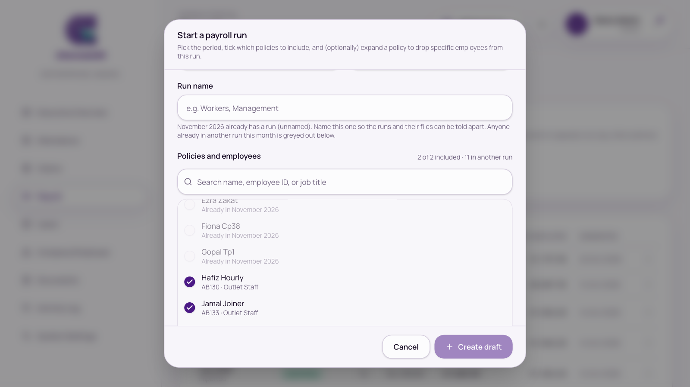
Run name and greyed-out people
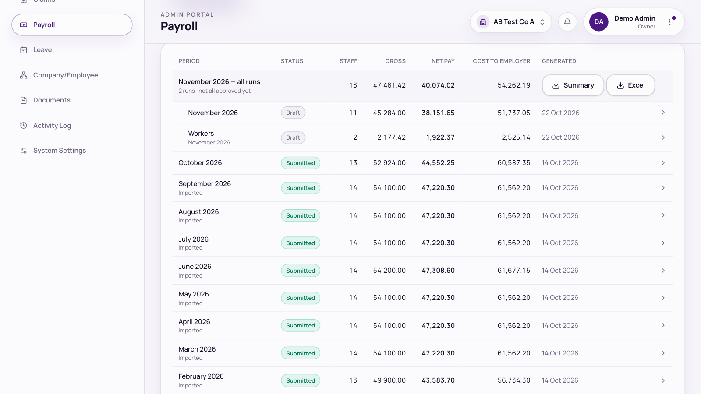
The month's all-runs row
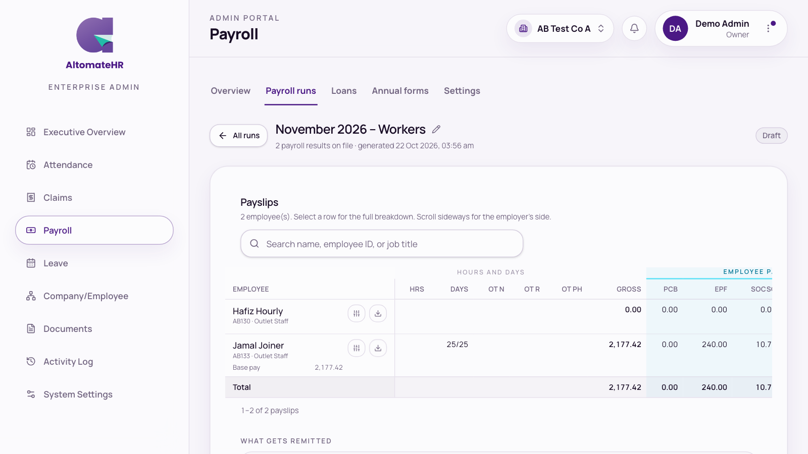
A named run, with its pencil
Paying a month in several runs
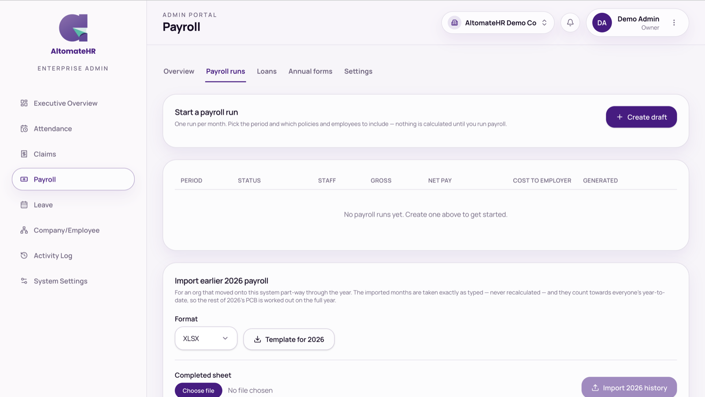
Payroll runs
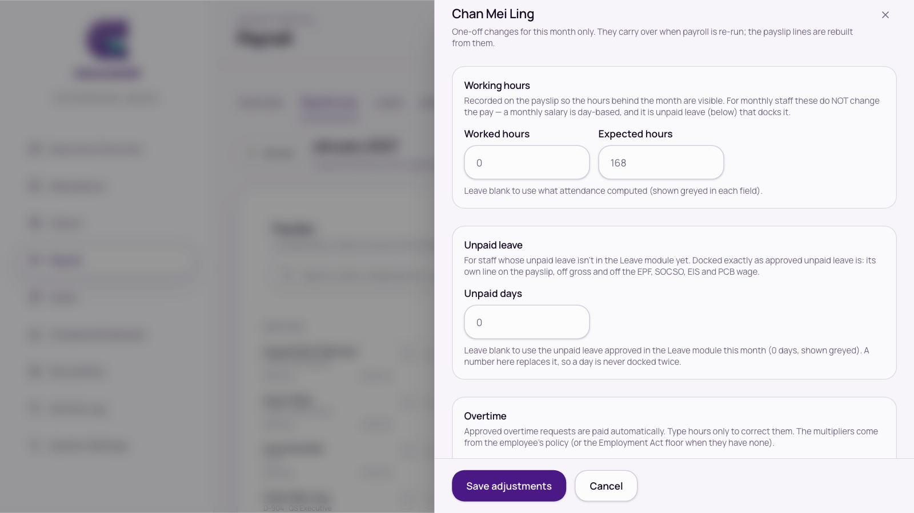
Adjustments drawer
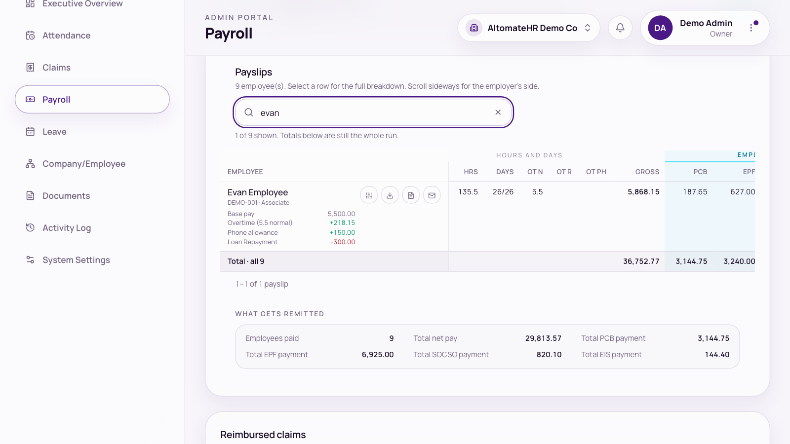
Searching a run's payslips
A payroll run
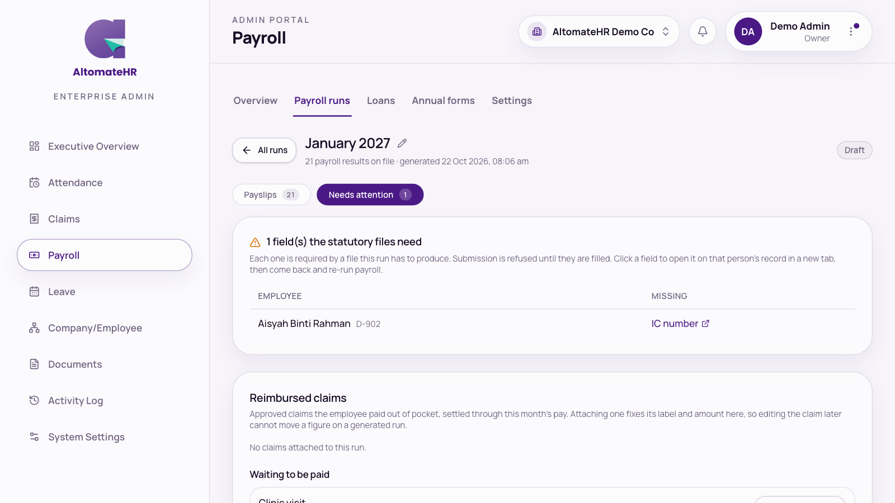
Needs attention: click a missing field to fix it
When a run needs re-running
Payroll summary for approval, on a draft run
Cost to employer
The Cost to employer column on Payroll runs (and the Cost figure on the Overview, and on each person's payslip detail) is what the company actually pays out for the month: gross pay plus its own EPF, SOCSO, EIS and HRDF contributions. A deduction the company keeps — Loan Repayment and Miscellaneous / Other Deduction — is taken off that cost as well as off the person's net pay, because the company never pays that money out. Deductions passed on to someone else, such as CP38 and extra PCB to LHDN, or zakat, still count as cost. Months you imported from earlier payroll follow the same rule.
Gross on the payroll screens
The Gross column on Payroll runs (each person's row and the Total row), the Gross in the runs list, the Gross figure on the Overview, and the Gross in the Payroll Summary PDF and Excel all show pay after the deductions the company keeps — Loan Repayment and Miscellaneous / Other Deduction. This is how PayrollPanda shows it, so the figures line up when you compare the two, and a row adds up to net pay once the other deductions (EPF, SOCSO, EIS, PCB and so on) come off. For example, someone with RM 5,000 of earnings and RM 200 of Miscellaneous / Other Deduction shows a Gross of RM 4,800. With no such deduction, Gross is simply their total pay.
Two things stay on full pay. A person's payslip — the one they see, and the payslip panel you open from their row — still shows total earnings, with the deduction listed under Deductions. And EPF, SOCSO, EIS and PCB are still worked out on the full pay, so the Gross column can be lower than the figure those contributions are based on.
The Payroll Overview
The first tab sums it up: runs waiting for your approval, employees not ready to file, drafts to re-run, the latest run's totals, and everything filed so far this year. When the latest month is paid in several runs, the card is called Latest month and adds the runs up — staff, gross, net pay and cost — with Not all approved until every run is approved, and the link becomes Open the runs.
Files & payslips
Every month
Once a run is approved, Documents and files opens. Tick what you need and Download selected.
| Group | Files | Where it goes |
|---|---|---|
| Reports | Payroll Summary (as a PDF or as Excel), Payment Schedule (who is paid what, split into the bank file and those paid manually), PCB Calculation Details, Allowance & Deduction Reports (ZIP) | Your records / approver |
| AB Pay timesheet (Excel) — only if your company is connected to ABPay | The ABPay app, and your records | |
| Statutory | Download EPF, SOCSO & PCB (zip) — the four files below in one zip | See each file below |
| EPF Contribution CSV | KWSP i-Akaun | |
| SOCSO + EIS Contribution TXT (v1) | PERKESO ASSIST — for months before June 2026, or while PERKESO still accepts either layout (June to September 2026) | |
| SOCSO + EIS + SKBBK Contribution TXT (ASSIST 2.0) | PERKESO ASSIST 2.0 — compulsory from June 2026 | |
| PCB / MTD TXT (CP39) | LHDN e-PCB — the file is named with your employer number, the month and the year, for example 6051351020072026.txt | |
| TP1 / TP3 Claims List | Your records — everyone who claimed reliefs on Borang PCB/TP1 this month, or declared a previous employer on TP3 | |
| Payslips | Bulk payslips (a ZIP of PDFs), or Email all to each employee | Employees |
| Bank | The bulk payment file for your payroll bank | Your bank's portal |
| Manual Payments (Excel) | Your finance team — pay these by hand |
LHDN's e-PCB upload only accepts file names made of letters and digits. Upload the CP39 file exactly as downloaded. If you download it twice, your browser may save the second copy as something like … (1).txt, and LHDN refuses that name. Rename it (for example to 6051351020072026.txt), or use the first copy.
All the agency uploads in one zip
At the Statutory uploads heading, Download EPF, SOCSO & PCB (zip) gives you one zip holding the EPF CSV, both SOCSO + EIS files (the v1 layout and the ASSIST 2.0 layout with SKBBK) and the PCB file. Open the zip and upload each file to its own portal, named as in the table above. You don't have to tick anything first.
A file that can't be made yet — for example the PCB file when the employer tax number is missing — is left out of the zip. A line under the heading says how many files came down, and the row of each missing file says why, in the same words as when you download that file on its own. Fix what it asks for and press the button again. The single-file buttons are still there when you only want one.
The bank file follows your bank
- Public Bank — ECP Bulk Payroll (.xlsx)
- Maybank — Maybank2E universal payment file (.txt)
- CIMB — BizChannel@CIMB bulk payroll (Excel), for IC and passport holders alike (see below)
- Hong Leong — ConnectFirst, plus a ConnectBiz template
Set the payment date before downloading. (For CIMB the box isn't shown — CIMB's template has no payment date; you choose it in BizChannel when you upload.) The file is refused — with a message saying why — if a bank setting is missing, an employee's bank isn't recognised, or someone paid by bank transfer has an account number with no digits (such as “N/A”) — the message names them. If your payroll bank is “Other”, no bank file is produced.
Whatever your bank, only employees paid by Bank transfer are in the file. The Public Bank file leaves out anyone whose payment method is Other bank / e-wallet, Cash or Cheque. Pay them from Manual Payments.
CIMB: one Excel file for everyone
For CIMB the download is BizChannel@CIMB Bulk Payroll (Excel): CIMB's own bulk payroll template, filled in with the name, bank, account number and amount of everyone paid by bank transfer. Staff with an IC and staff with a passport go in the same file, so there is no separate sheet for passport holders. Upload it under Bulk Payments in BizChannel@CIMB. The organisation code setting isn't used for CIMB — only Maybank needs it. CIMB's template takes an account number of at most 16 digits; a longer one is never cut short, the file is refused and names the person so you can check their account number.
The bank file and Manual Payments together add up to the run's total net pay, so nobody is missed.
If the month is paid in several runs, each run has its own files, and a named run's file names carry its name (letters and digits only), so you can tell the office staff's PCB file from the workers'. The window is headed with the run's name too.
Manual Payments (Excel) is always offered. It lists everyone the bank file doesn't pay — other banks and e-wallets such as Merchantrade, cash, cheque, and anyone missing bank details — with account, amount and totals, so you can pay them yourself.
Payroll Summary: PDF or Excel
The Payroll Summary row has two buttons, PDF and Excel. The PDF is the one-page summary of the run's totals. The Excel file has three sheets, so you can sort and filter. If you tick the row and press Download selected, you get both files.
You don't have to wait for approval to get this one: while a run is a draft or waiting for approval, the Payroll summary for approval card gives the same summary, marked as not approved (see Running payroll). Once the run is approved, the summary here is the final one.
- Summary — one row per employee with the same figures as the PDF, and a totals row.
- Totals — the closing block of the PDF: headcount, net pay, PCB, HRDF, EPF, SOCSO, EIS, zakat and benefits in kind.
- Breakdown — each employee's pay laid out across the page, described below.
On the Breakdown sheet there is one row per employee and one column per pay item.
- Fixed columns — Basic, U/L (unpaid leave), Travelling, Meal, Parking, Hours, OT, Comm (commission), Bonus and Deduction. Hours is the number of overtime hours, not an amount.
- Other items — after those, a column for each other allowance, claim or deduction that someone on this run has, such as a phone allowance or a loan repayment. A column only appears if somebody has that item this month.
- Total Gross — each person's money columns added up. Deductions show as negative numbers (in red), so they are taken off. Hours is not counted. A note on the Total Gross heading explains this.
- Totals row — the last row adds up every column. It is kept below the employees, so sorting or filtering the list never moves it.
Some items are shown for information but are not added into Total Gross. They sit to the right of Total Gross, under a heading that says NOT IN TOTAL GROSS: benefits in kind (marked "non-cash"), TP1 items such as tax reliefs, zakat, and additional PCB. EPF, SOCSO, EIS and the regular PCB stay on the Summary sheet.
Total Gross can differ from Gross on the Summary sheet. The Summary sheet's Gross takes off only the deductions the company keeps (loans and Miscellaneous / Other Deduction), not other deductions taken from net pay, such as CP38.
Allowance and Deduction reports (ZIP)
The Reports group has one row, Allowance & Deduction Reports (ZIP), with both Excel reports in a single zip. (They used to be two separate rows.) Each report has one row per employee and one column per item, with a totals row at the bottom.
- Allowance report lists every allowance on the run. Benefits in kind are listed but not counted as cash in the totals.
- Deduction report lists deductions other than EPF, SOCSO, EIS and PCB, such as loans, unpaid leave and advances. Unpaid leave and advances are listed but not added into the total, because the payslip takes them off gross pay instead.
AB Pay timesheet (Excel)
If your company is connected to ABPay, the Reports group also has AB Pay timesheet (Excel). It writes the run out in the layout of the AB Pay timesheet — each employee's basic pay, unpaid leave, allowances, overtime, commission, bonus and deductions — so ABPay can read it back in. A second sheet, Statutory, lists each person's EPF, SOCSO, EIS, PCB and net pay.
Anything in an employee's pay that has no AB Pay column — such as other allowances, claims paid through payroll or an advance recovery — is still counted in Total Gross, so that row's total can be more or less than its columns add up to. A note on the Total Gross heading, and the notes at the bottom of the Statutory sheet, explain this and show the difference for each person.
You only see this file when your company is connected to ABPay. If you use ABPay and don't see it, ask your AltomateHR contact to check the connection — it can't be switched on from the admin portal.
Individual payslips can be downloaded or emailed from each person's row once the run is filed. Each row also has a button for that person's Borang PCB/TP1 (the reliefs they claimed, this month and year to date). Email all asks you to confirm first — payslips can't be recalled once sent.
Reports
Statutory uploads, one zip
Downloading the month's files
Loans & advances
Payroll → Loans. Money lent to an employee, repaid from their pay.
Record a loan — the employee, the amount, and either over a number of months or a fixed amount each month, starting from the month you choose. Each payroll run deducts the instalment by itself. The table shows what's outstanding and the repayment schedule, with a warning under a loan if repayments run past the employee's leaving date or loans together are over half their monthly salary.
Once repayments have been taken, the amount lent and the months already filed are locked — but you can still change what's left:
- Re-plan — spread the balance over a number of months, as a fixed amount each month, set each month, or settle it all next payroll. Months already submitted or awaiting approval can't change; the page names the earliest month that can.
- Pause — skip a number of months, or pause until I resume it, from the month you pick. Nothing is forgiven: what was due moves into the next months that aren't skipped, so the loan ends later. Skipped months show as “skipped” in the schedule.
- Resume — on a paused loan, choose the month to start deducting again.
- Cancel — stops the remaining deductions.
A loan can only be recorded for someone who has saved payroll details.
Loans and advances
Annual tax forms
Every year
Payroll → Annual forms. Pick the filing year — only approved runs count.
- Form EA (bulk) — every employee's EA in LHDN's C.P.8A layout, one page each, to hand out by 28 February.
- PCB 2(II) (bulk) — each employee's statement of PCB deducted, in LHDN's own layout, with the receipt numbers you saved on each month. Unlike the returns it doesn't wait for the whole year, so you can download it any time.
- Form E + CP8D — the employer's return and its employee list.
- LHDN e-CP8D upload — in LHDN's current 22-field layout. LHDN's e-CP8D takes the employee file (P) only; the employer master (M) is there for your records.
- CP8D converter — for a year you didn't run in AltomateHR: type the figures in and download the upload files. Each row also needs a Status, a Retire / contract end date (or the date they left) and their PERKESO amount (SOCSO and EIS together).
The forms (EA, CP8D, Form E) stay greyed out until every month they cover is approved — by default January to December. If the page shows 9/12 monthly runs approved, approve the months listed under Missing.
If you pick a year before payroll started at this company, the page says No payroll ran here in that year, with no forms to download — there is nothing to approve. Pick a later year.
The Payroll at this company started in card, above the forms, changes which months are needed. It's set to January or earlier; pick another month and the forms wait for that month through December instead. Use it only if the company paid nobody before then — a new company, or one staff were transferred into. If you paid staff earlier in the year in another system, leave it at January and use the YTD import for those months, or the forms would under-declare what the company paid. Admins who can change settings can edit it.
CP8D needs your LHDN employer number — the page warns you if it's missing. Each employee's status and contract end date come from the Employment tab of their record; if left blank they count as permanent, with retirement at 60.
Annual tax forms
Per-employee LHDN forms
In an employee's record, Documents → LHDN Forms: pick the year and download PCB 2(II), EA (statement of remuneration), CP22 (new employee), CP22A (leaving), CP21 (leaving the country) or PCB/TP3. CP22A and CP21 open as soon as you've set their Last day (Employment tab → Archive) — you don't have to archive them first — and show a deadline badge counting down to 30 days before that date.
The Year box is used by the two year-based forms, PCB 2(II) and EA. The EA — Statement of remuneration card covers the year through December, so its Download PDF button stays greyed out, with the reason beneath it, until every month from January (or from the month set under Payroll at this company started in) is approved. That includes someone who has left — they might come back the same year. Change the year and the card updates. The file is named EA_<employee no>_<year>.pdf. To print everyone's EA at once, use Form EA (bulk) under Payroll → Annual forms; that is unchanged.
Starting mid-year
Joined partway through the year? Bring in what's already been paid so PCB carries on correctly instead of starting from zero.
At the bottom of Payroll runs, Import earlier payroll: download the template for the year, fill in each month's figures, Preview, then import. Imported months are never recalculated and count toward everyone's year-to-date. The preview has a search box, so you can find one person by name and check their figures.
If your file has an HRDF column, it's read under the names payroll systems usually give it: HRDF, Employer HRDF Levy (the name PayrollPanda uses), HRDF Levy, Employer HRDF or HRD Corp Levy. If you imported months before and their HRDF came through empty, import the same file again: it replaces those months with the HRDF filled in.
The preview checks every row against your employee list before anything is imported:
- If the IC on a row belongs to a different employee than the name on it, the preview refuses the file and tells you which row — fix the IC or the name. The same goes for two rows that match the same person: each person can appear only once.
- If a row's IC isn't on file for anyone, but the name matches, the row is matched by name and the preview warns you to check the IC.
- When the name in your sheet is spelt differently from the employee record, the row is shown as Sheet name → Matched name, so you can see who it really landed on.
- If importing would replace a month that was imported before, the warning also names anyone who has imported figures in that month but no row for it in your file, and the months they would lose. Each month is replaced whole, so add their rows (or fix a misspelt name) to keep them.
The file only has to hold the months you're adding. If January to August are already imported and you now import only September, the earlier months stay exactly as they are. The preview's warnings name only the months in your file: a month that was imported before will be replaced, and a month that already has payroll in AltomateHR will be skipped.
Imported months are history from your previous system, so they can't be reverted to draft or re-run. To correct one, import that month again; it replaces the old figures. Reverting an earlier month in AltomateHR never pulls an imported month back to draft.
For someone who joined from another employer this year, fill in Previous employment (TP3) on the Employment tab of their record.
HR letters (Documents)
Documents → Templates and Documents → Letters. Offer, confirmation, resignation and warning letters for your company: write each one once as a template, then produce a PDF for any employee with their details filled in. Letters are for admins — employees never see them in their own app.
Each letter prints your company logo at the top left. Add it once under System Settings → Organization → Company logo; until you do, letters print without one.
A letter can also print a saved signature above the signatory's name. Add them under System Settings → Organization → Signatures; with none, the letter leaves a space to sign by hand.
Templates
Open Documents → Templates. Each template shows its category (Offer, Confirmation, Promotion, Resignation, Termination, Warning or Other), when it was last updated and how many merge fields it uses, with Generate, Edit and Delete beside it. Deleting a template keeps the letters already made from it.
- Add sample templates — four ready-made letters: Offer Letter, Confirmation of Employment, Resignation Acceptance and First Written Warning. They're marked Sample. Replace the sample wording with your own before you use them. Pressing it again only adds the ones you don't have yet.
- New template (or Start from blank when you have none yet) — write one from scratch.
- Upload Word file — start from a letter you already have. See below.
- Write with AI — describe the letter and let AI draft it for you. See below. With no templates yet it sits beside Start from blank.
Templates
Writing a template
Name it and pick a category
Give it a Name (for example Offer Letter — Executive) and a Category.
Write the letter
Type in the Write box. Start a line with
#for a heading, wrap words in**two stars**for bold, start a line with-for a bullet, and leave a blank line between paragraphs. Switch to Preview to see how it will read. The PDF adds your letterhead, the date and the signature block, so you don't type those. Your logo isn't shown in the preview. It's added on the PDF once you've uploaded it in System Settings → Organization (the preview has a note saying so).Add merge fields where the details go
On the right, Merge fields are grouped as Employee, Company, Signatory and Letter. Click the cursor where you want a detail, then click a field — for example Employee name, Job title, Monthly salary or Company name — and it's inserted as
{{employee.name}}. When the letter is made, each one is filled in from the employee's and the company's records. Copy the list of merge fields copies every field name, handy for a Word file.Details you type each time
For something that isn't on any record — an offer expiry date, a last working day — type a name under Typed for each letter (for example Last working day) and press the + button. The dialog will ask for it every time you make the letter. A name that ends in "date" or "day" is asked for as a date.
Pick a default signature (optional)
Under Default signature (optional), choose which saved signature letters from this template start with. Company default (it shows the signer's name) follows whichever signature is the company default. The choice is still changeable when each letter is made. If the signature you chose is later removed, a note says so and the template's letters use the company default.
Preview, then save
Preview PDF downloads a sample of the letter as it stands now, saved or not, with the signature you've picked printed on it. Save template keeps it. If you press the back arrow with unsaved edits you're asked Discard changes?
If the text has a {{…}} that isn't a merge field — a typo, say — a red box says
These merge fields don't exist and lists it. Save template and
Preview PDF stay switched off until you fix it: pick a replacement from the
Replace with… list beside it, or correct the wording.
Starting from a Word file
Upload Word file takes a Word (.docx), .txt or
.md file up to 5 MB. An older .doc must be saved as .docx in Word first.
It's converted and opens in the editor as New template · from upload, so you can check it before
anything is kept.
- Tip: in Word, type placeholders such as
{{employee.name}}where the details should go, then upload. - A yellow box under Imported from … lists what didn't come across: pictures, text boxes, headers and footers (the PDF prints your company letterhead instead), tables turned into lines of text, and numbered lists turned into bullets.
- Any placeholder that isn't a merge field — for example
{{Employee Name}}or{{IC}}— is listed under Map these placeholders to merge fields. For each one, choose Replace with… and pick the matching field, or the Typed for each letter version. Every place it's used is changed at once. - Check the name and category, then press Save template. Delete the date, letterhead or signature lines if they came across from your file, because the PDF adds its own.
Writing a template with AI
Press Write with AI on Documents → Templates to have AI draft a template for you. You can describe the letter in English or Bahasa Melayu, and the AI answers in the same language. Nothing is saved until you press Save template.
Describe the letter
Say who it's for and what it should cover — for example An offer letter for a site engineer: 3-month probation, salary, start date and who they report to. Press one of the example lines under the box to start from it. Then press Write two drafts.
Read the two drafts
Two drafts appear side by side, each with its name, category and a preview. Employee and company details are already merge fields, and anything that isn't on a record (a start date, a reporting manager) is a Typed for each letter detail. To change them, type what you want under Ask for changes — for example Make draft 2 shorter — and press Write two new drafts.
Open one in the editor
Press Use this draft on the one you like. It opens in the editor as New template · written with AI, unsaved, with a Written with AI note above it. Read it through and adjust the wording to your company's policies — it isn't legal advice — then press Save template.
Two drafts to choose from (made-up demo letter)
- A yellow note under a draft lists anything to fix in the editor — for example a
{{…}}that isn't a merge field. Once it's open there, the same red These merge fields don't exist box appears and Replace with… lets you pick the right one. - The PDF always adds its own letterhead, date and sign-off ("Yours sincerely, for and on behalf of …"), so the draft stops at the last paragraph. The sign-off stays in English even when the letter is in Bahasa Melayu.
- The AI only sees what you type and the list of merge field names, never an employee's details.
Changing a template with Ask AI
In the editor, the Ask AI panel sits at the top of the right-hand column, above Merge fields. Type what to change — make it more formal, add a clause on annual leave, translate to Bahasa Melayu — and press Ask. The AI rewrites the text in the Write box. While it's working, the text, name and merge field buttons are locked, so wait for it to finish.
- Undo last change brings back the text from before the AI's last rewrite. It shows only while the text is still exactly what the AI wrote — once you type in the box yourself it goes away, so an undo can never throw your own edits away.
- Ask AI works on a letter that's already written. On an empty editor it's switched off — start one with Write with AI, or write the first lines yourself.
- It's there on any template you open, not only ones written with AI. With view-only access to Documents it doesn't show.
Opened from a draft
After asking for a change
Making a letter for an employee
Press Generate next to a template, Generate letter on Documents → Letters, or Generate letter on the Letters card of an employee's record. Pick the Template and the Employee if they aren't already chosen, and the dialog reads their records.
- Signature — a list of your saved signatures, with a picture of the one chosen. It starts on the template's default signature, or else the company default. Pick another, or No signature (sign by hand) to leave a space to sign by hand. A signature is printed above the signatory's name on the PDF, and its name and position become the letter's signatory, shown under From the records. With no saved signatures the dialog says so and points you to Settings → Organization.
- Missing details — anything the letter needs that isn't on file is highlighted with a Not on file tag. Fill in each one, or tick Leave blank on this letter. A letter never goes out with a gap you haven't seen: Generate PDF stays off, and the bottom of the dialog lists what's still needed, until every one is dealt with.
- For this letter — the details you set up as Typed for each letter. They aren't kept on any record.
- From the records — what was found, read-only. If one is wrong for this letter, press Edit for this letter and type another; Use record puts it back. Nothing on the record changes. If you change the signature after editing the signatory, your edit is dropped and the new signature's name and position show instead.
- Also save to employee record — for a missing ID number, address, job title, department, work location, probation or confirmation date you can tick this to write what you typed onto the employee's record as well, so you only type it once. It only fills an empty field. It needs Manage access on Employees, and while you have unsaved edits on that employee's record it says Save or discard your changes first.
- Missing company details — a missing company detail (such as the address) or signatory has a hint: company details are set in Payroll → Settings → Form E (LHDN) → Employer details (with no signature chosen, the signatory defaults to the declarant there). Open Payroll takes you there, or you can type the detail for this letter.
- Save a copy to the employee's file is ticked by default. Untick it to download the PDF without keeping it.
Press Generate PDF. The PDF downloads, and the dialog says Downloaded, and kept on … file (admins only). Generate again makes another.
Letters on file
Documents → Letters lists every letter kept, newest first, with its category, the employee, the date, who made it and its size. A letter made with a saved signature also shows Signed: and the signer's name. Use the employee list at the top to see one person's. Click a letter, or its download button, to open the PDF; the bin button deletes it for good after you confirm. The same list for one person is on the Letters card at the bottom of their Documents tab in Manage Employee — separate from the ID scans and contracts above it, which the employee can see.
Probation and confirmation details for the letters live on the Employment tab of the record: Probation (months) and Confirmation date.
Documents is one of the modules in System Settings → Admins → Manage access. View lets an admin see templates and letters and download them; Manage also lets them write and delete templates and make and delete letters. Because a letter prints the employee's record, they also need access to Employees — without it the Letters list says You need access to Employees to view saved letters. An admin without the Documents module doesn't see the Documents page or the Letters card at all.
Xero
Connect in System Settings → Organization. Each company connects to its own Xero organisation.
- Connect — sign in to Xero and choose only this company's organisation.
- Chart of accounts — Xero owns it while connected; Sync from Xero in Accounts. Accounts no longer in Xero are archived.
- Projects — pulled from Xero Projects, or from the options of a tracking category you choose. Once you choose a category, it is the project list: projects made by hand, or not in that category, are hidden from the pickers (clearing the category brings them back).
- Claims — approved claims become a bill (own money) or a spend-money transaction (company money).
- Payroll — the payroll journal is posted when a run is approved, if you've switched it on. In Payroll → Settings → Xero sync, the expense lines offer expense accounts and the payables (EPF, SOCSO, EIS, PCB, net salary) offer liability accounts — sync from Xero first if a list is empty. A saved account of the wrong type is flagged so you can pick again.
- If a Connect or Reconnect doesn't finish while Xero is still connected, the card shows a calm note that nothing changed and the organisation is still connected. Reloading the page after a successful connect no longer shows "Xero didn't finish connecting".
- Reconnect if the card says the connection has stopped working; Disconnect removes AltomateHR from that Xero organisation.
The Xero connection
Notifications & the app
The bell shows requests and decisions as they happen. If your browser supports it, turn on push notifications from the ⋮ menu to get them on your phone or computer even when AltomateHR isn't open. The same menu has What's new for our release notes and Guide to open this guide.
AltomateHR runs in the browser. On a phone, add it to your home screen (iPhone: Share → Add to Home Screen; Android: menu → Install app) and it opens like an app.
Activity Log
Who did what, and when — sign-ins, settings, people, teams, accounts, projects and Xero, and any leave that was cancelled (filter by Leave cancellations). Open a row to see what changed, before and after.
Activity Log
Common questions
Why can't I approve a claim or leave from the admin portal?
Approvals belong to the supervisors in Company Structure, from their queue in the employee app. The admin portal shows who each request is waiting on — if it says “Nobody can approve”, add an approver to that person's team.
Why can't I send the payroll run for approval?
The message beside the button says why: the run needs re-running, someone's net pay would be negative, a required field is missing or an EPF number isn't digits only (See what's missing), or last month hasn't been filed.
The bank file was refused.
Either a bank setting is missing in Payroll → Settings, someone's account number has no digits or (for CIMB) is longer than 16 digits, or an employee's bank isn't one the app recognises — pick it from the dropdown in their record (or set their Bank / payout method to Other bank / e-wallet, Cash or Cheque to pay them by hand), then download again.
The EPF file was refused: “KWSP will refuse this file”.
The message names each person whose EPF number isn't digits only. Open their record, fix the EPF number on the Statutory tab (the member number on their KWSP statement) and save, then download the file again. You don't need to re-run payroll.
I can't press Generate PDF on a letter.
The letter still needs details. The line at the bottom of the dialog names each one — fill it in, or tick Leave blank on this letter. See HR letters.
Someone left. Do I delete them?
No — archive them (Employment tab → Archive, with their last day). Payroll pays them up to that day, then they drop out of future runs but keep every payslip and form.
A new employee can't sign in.
Their starting password is their email followed by their birth month and day, so their date of birth must be on file. Or use Set password on their record.